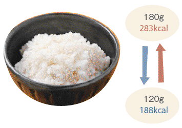
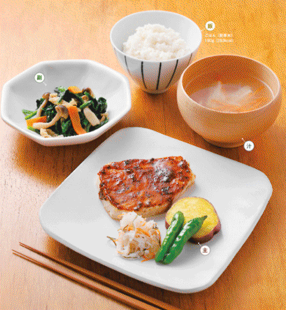
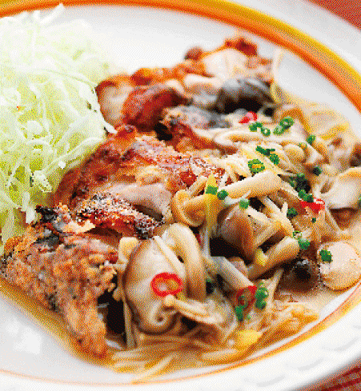

| 女子栄養大学の学生食堂 500kcalからの好バランス定食 | |
| Unknown | |
| PHP研究所 (2010) | |

女子栄養大学の学生食堂
――500kcalからの好バランス定食
女子栄養大学
はじめに
この本を手にとっていただき、ありがとうございます。
女子栄養大学の学生食堂では、「計量カップ＆スプーンを日本で初めて作った」「料理カードを考案した」そして「最先端の栄養学を学べる」大学ならではの、栄養のバランスにとことんこだわった、おいしい食事をいただくことができます。
カロリーや塩分は控えめに、さらに食に通じた予防医学の観点から考えだされた「四群点数法」に基づいたレシピは、食べる人の健康をいちばんに考えたメニューになっています。
今回取材した、利用している学生や教職員、そしてご近所の方々からは、「うす味でもおいしく食べている」「野菜がたくさん食べられて体の調子がよくなった」という声を聞きました。
この本を手にとってくださったみなさんも、このレシピを実践していただいたら、自然とうす味に慣れ、また野菜をたくさん食べていただけると思います。ふだん、カロリーが気になるという方も、ごはんの量を少なくすれば、１食分のカロリーをもっと低く抑えることができます。
今回この本で紹介しているレシピは、女子栄養大学の駒込カフェテリア、坂戸カフェテリアのメニューから、人気の高いメニューをピックアップしました。
おいしくてヘルシーな、日本トップクラスの学食の料理を、ぜひみなさんの食卓でお楽しみください。
PHP研究所
＋チンゲンサイときのこのあえもの＋白菜といんげんのみそ汁
＋なすの揚げだし風＋とろろこんぶのすまし汁
＋青菜と高野豆腐の煮びたし＋白菜とわかめのみそ汁
＋ほうれん草とかまぼこのからしあえ＋もやしといんげんのみそ汁
＋トマトと青じそのサラダ＋油揚げとたまねぎのみそ汁
＋春菊とえのきのナムル＋キャベツとたまねぎのみそ汁
＋青菜とひじきのごまあえ＋コーンスープ
＋なすとえびのチリソース炒め＋豆腐とわかめのみそ汁
＋もやしといんげんのごま酢あえ＋しめじと白菜のみそ汁
●魚の定食
＋キャベツと蒸し鶏のたらこマヨネーズあえ＋もやしとわかめのみそ汁
＋ほうれん草のごまみそあえ＋たまねぎと絹さやのみそ汁
＋きんぴらごぼう＋油揚げとほうれん草のみそ汁
＋ごぼうサラダ＋白菜と絹さやのみそ汁
＋凍り豆腐と鶏肉の煮物＋さといもと小松菜のみそ汁
＋青菜としめじの煮びたし＋春雨スープ
＋鶏肉ときゅうりの中華風あえ＋わかめスープ
＋大根・水菜・鶏肉の梅ドレサラダ＋青菜と豆腐のみそ汁
●豆腐＆野菜の定食
＋なめこのおろしあえ＋かきたま汁
＋切りこんぶといかの煮物＋大根とたまねぎのみそ汁
＋大根ときゅうりのごま酢あえ＋えのきといんげんのみそ汁
＋もやしの五目ごまあえ＋なすと絹さやのみそ汁
＋ほうれん草と白菜のおかかあえ＋もやしとにらのみそ汁
●丼の定食
＋かぼちゃそぼろあんかけ＋豆腐のすまし汁＋フルーツ
＋５色酢の物＋キャベツとえのきのみそ汁＋フルーツ
＋チンゲンサイと大根のナムル＋きのことわかめの中華風スープ＋フルーツゼリー
＋豆腐のきのこあんかけ＋白菜とベーコンのスープ＋フルーツ
＋たけのこの土佐煮＋はんぺんのすまし汁＋フルーツ
＋たことにらのナムル風＋油揚げと白菜のみそ汁＋フルーツ
＋キャベツときゅうりのごま酢あえ＋白菜スープ＋フルーツ
＋春雨サラダ＋野菜スープ＋フルーツ
●デザート
女子栄養大学の学生食堂って、どんな食堂なの？
学園創立当時からあるといわれ、現在は「カフェテリア」と呼ばれている学生食堂。
栄養のバランスのよさでは、学生食堂No.1とのウワサも。
カロリーや塩分が控えめで、ヘルシーでおいしい定食は、ご近所の人にも大人気です。
Ｑ どんな定食があるの？
Ａ：肉と魚の定食があります！
食堂で用意される定食（主菜＋副菜＋汁＋ごはん）は日替わりで、肉と魚の２種類から選べます。食材にはたくさんの種類の野菜を使い、塩分は控えめです。
Ｑ 献立はどうやって決めているの？
Ａ：どの年代の人でも満足できるよう、管理栄養士が、調理法や栄養価をこまかく考えて決めています。
利用者は学生からご近所の人たちまで、つまり10代後半から70代までと幅広いのがこの学食の特徴。どの年代の好みも網羅できるよう、Ａ定食が和風ならＢ定食は洋風、一方が煮ものならもう片方は揚げものにするなど、調理法を変えています。副菜も同様に４～５品用意し、好みに合わせた選び方が可能です。もともと女子学生対象の学食なので、その必要なエネルギー量に合わせて１食平均650kcalになっています。
Ｑ いくらで食べられるのか教えて！
Ａ：定食は420円。単品の小鉢（副菜）を、もうひとつ足しても、500円で食べられます。
Ｑ デザートも手作りなの？
Ａ：さつまいもやかぼちゃ、ごまや黒糖など、体にいいものをベースに、手作りのものを出しています。

Ｑ 駒込の学食と坂戸の学食で、メニューは違うの？
Ａ：少しだけ違います。
両キャンパスの環境や、管理栄養士のこだわりによってメニューは異なります。たとえば、坂戸では定食の新作が２～３か月に１品ですが、駒込ではひと月に１～２品。駒込のほうが坂戸より学生数が少なく、比較的新しい献立にチャレンジしやすいためです。
Ｑ どうしてごはんは"胚芽米"を使っているの？
Ａ：白米より栄養があり、玄米より食べやすいからです。
女子栄養大学の学食では、学園の創立当初から胚芽米を使用しています。昭和初期、日本中に「脚気（かっけ）」が流行した際、学園創立者の香川綾は、その原因がビタミン不足であることをつきとめ、ビタミンの多い胚芽米にいち早く着目しました。胚芽米は、ビタミンのほか、ミネラル（カリウムやマグネシウムなど）、食物繊維などを豊富に含む"胚芽"の部分を残して精米したお米で、白米よりも栄養価が高く、玄米に比べて食べやすい、消化しやすいという特徴があります。
Ｑ 胚芽米を炊くときに行っている"ひと工夫"って？
Ａ："葉酸米"を混ぜて炊いています。貧血予防や、胃腸の働きを整える効果があります。
2010年から、学食の胚芽米には"葉酸米"を混ぜるようになりました。葉酸はビタミンB群のひとつで、脳卒中や心筋梗塞の原因となる動脈硬化、そして認知症を予防する効果があります。しかし、食品から必要量を摂取するのが大変なうえ（次表参照）、不足すると貧血を起こしやすくなります。妊娠中の女性に不足した場合、生まれてくる子供に障害を招く危険性が高まるとも。"葉酸米"を混ぜると、胚芽米80g（お茶碗１杯分）あたり14μgだった葉酸が、114μgまで増量します。つまり、お茶碗２杯分で、成人男女に必要な約１日分の葉酸を摂取できることになります。
そもそも、女子栄養大学って？
女子栄養大学は、医者であり栄養学者であった、香川綾が創立した学園です。
「食は生命なり」をモットーに、学園一丸となって栄養学の教育と研究に取り組み、多くの栄養士や、食のプロを養成し、世に送り出しています。
Ｑ "香川綾"って、いったい誰？
Ａ：女子栄養大学の創立者であり、日本の食生活に栄養学を浸透させた、"実践栄養学の母"です。
「すべての人が健康で、そして幸せであるように」という思いから、生涯を通して栄養学の普及に努めた女性です。幼い頃に母親をなくし、それをきっかけに医者となった彼女は、胚芽米が「脚気（かっけ）」の治療に役立つことから、"病気になってから治すのではなく、病気になる前に予防をする"予防医学の大切さを学びます。予防医学を広めるためには、正しい食生活と栄養指導が必要だと思い、栄養学の普及活動に邁進。彼女の功績は、現在の私たちの食生活や、日本の現代栄養学に深く浸透しています。
Ｑ 栄養学ってどんな学問？
Ａ：食べ物に含まれる栄養素が、体にどんな働きをするのかを研究する学問です。
私たちの体は、今までに食べてきたものによって支えられています。きちんと食べなければ健康ではいられません。女子栄養大学では、食を通じた予防医学の立場から栄養学をとらえ、学生も教職員も"どう食べれば病気にならず、健康に生きられるか"を、実験や研究を通して日々学んでいます。
女子栄養大学の栄養学の教育と研究は、国内トップクラス！
Ｑ 大学が創立してどのくらい経つの？
Ａ：70年以上続く、歴史ある大学です。
昭和８年に香川綾と夫の香川昇三によって発足した"家庭食養研究会"がその前身にあたります。
Ｑ 学園直営の農園や、クリニックもあるってホント？
Ａ：ホントです。
農園は坂戸キャンパスの「農園体験」の授業で利用しており、収穫した野菜は"農園スイーツ"として売店で売られることも。
クリニックは四群点数法（「得する！ 栄養バランスのとり方＆カロリーの減らし方」参照）を実証するためにつくられたもので、現在は食事改善による生活習慣病の予防などに取り組んでいます。
Ｑ 料理の"レシピ"は、香川綾先生の"料理カード"がもとになったってホント？
Ａ：昭和10年に創刊した『栄養と料理』に、毎号１枚ずつ綴じていました。
栄養がある食材でも、おいしく食べられなければ意味がないと考えた綾は、"料理カード"を作成しました。これは当時、「お塩はぱらぱらとふって」というような、料理人の経験と勘でしかできなかった料理を、時間や分量などをすべて量って記録することで、誰でも作れるようにしたものです。
綾が料理の先生を招いて講習会を開き、料理カードを作っていると、「計量して料理を作るなんておもしろい！」と評判になり、習いたいという人が増えました。そこで綾は『栄養と料理』という雑誌を作り、講習会の内容と一緒に、料理カードを綴じて発刊したのです。今の"レシピ"という概念は、ここから生まれました。
Ｑ 計量カップと計量スプーンは、この学園で生まれたってホント？
Ａ：昭和23年、香川綾が、日本で初めて考案しました。
綾は料理カードを実践しやすいよう、分量の基準を作ろうと考えました。当時は、メートル法や尺貫法が混在していて、明確な基準となるものがなかったのです。目安も「ティースプーン１杯」などあいまいなもので、正確な分量を量ることができません。そこで、綾は200mlを１カップとし、5mlを小さじ１、15mlを中さじ１、30mlを大さじ１としました。使いやすさの面から、さじは最終的に5mlと15mlに統一。計量カップと計量スプーンとして考案したのです。
今では当たり前に使われているこの計量器具は、綾の普及活動によって世間に広まり、学校の家庭科やラジオの料理番組でも使われ、少しずつ家庭にも浸透していきました。改良を重ね、現在は次の写真のものになっています。
Ｑ 管理栄養士のほかには、どんな職業に就く人が多いの？
Ａ：商品開発やメニュー開発などを行う食品技術者や、食品会社の営業・販売など、いずれも大学で学んだ栄養学の知識を十分に活かせる分野で活躍しています。
管理栄養士国家試験の合格率は、95.4％！（2010年3月現在）
食堂利用者に突撃取材！ この学食のココがうれしい！
「この学食の好きなところは？」「ふだんの食生活にどんな変化が？」など、食堂利用者の感じている"うれしいこと"を聞きました。

この本の使い方
定食は、主菜・副菜・汁物・ごはん（丼の場合はフルーツ）で１食です。
各料理のエネルギーを表示し、栄養価や管理栄養士のアドバイスを見やすくまとめました。
定食１食まるごとでも、副菜や汁物を自由に組み合わせて作ることもできます。
 管理栄養士直伝の調理のコツやアレンジを紹介！
管理栄養士直伝の調理のコツやアレンジを紹介！
低カロリーに抑える工夫、食材やソースのアレンジなど、実際に献立を考え調理している管理栄養士からの、日々の献立作りに役立つアドバイスが満載です。
 単品ごとのエネルギーがひと目でわかる！
単品ごとのエネルギーがひと目でわかる！
定食の総エネルギーだけでなく、各料理のエネルギーも掲載。総エネルギーを抑えたいときは、ごはんの量を減らしたり、副菜をほかの定食のものや「人気の副菜」（p80～89）とかえるなど、調節することができます。
→カロリー調節のポイントは「得する！ 栄養バランスのとり方＆カロリーの減らし方」参照
気になる栄養バランスはココでチェック！
定食１食分のエネルギー、塩分、糖質、脂質、たんぱく質の栄養価を確認できます。"四群点数法"による点数もここに表示されます。
→四群点数法については「得する！ 栄養バランスのとり方＆カロリーの減らし方」参照
この本の材料・作り方の表示について
・小さじ１は５ml、大さじ１は15ml、１カップは200mlです。
・電子レンジの調理時間は、500Ｗの場合の目安です。600Ｗの場合はプラス30秒以内を目安に、様子を見ながら時間を調節してください。
・少量の油でも焦げ付かないよう、フライパンはフッ素樹脂加工のものがおすすめです。
得する！ 栄養バランスのとり方＆カロリーの減らし方
本書では、レシピの栄養価の欄に「四群点数法」による点数を表示しています。
「四群点数法」は、香川綾が考案した食事法です。
いったいどんな食事法なのか、カロリー調節のコツと一緒に紹介します。
「四群点数法」を使って、栄養を上手にとる
食品を栄養素別に大きく４つに分け、それぞれの食品群から１日に何をどれだけ食べると体によいかを考えます。第１群はカルシウムやコレステロールを多く含む食品群、第２群は筋肉や血液を作るたんぱく質、第３群はビタミンＣ・カロテン・食物繊維が豊富です。第４群は体のエネルギー源となる炭水化物などを多く含みます。80kcalを１点として、１日20点とることをベースに、自分の年齢や体重に合わせて調節します。
ここがPOINT！
・必ず、第１群から３点、第２群から３点、第３群から３点とる。
・1週間後の体重が±0.5kg以内におさまるように調節する。
・調節するときは、"必ずとりたい９点"は維持したまま、第４群を増やすか減らす。
ごはんや副菜を調節すれば、500kcalも可能に！
◎ごはんの量をかえる
本書では、定食のごはん（胚芽米）はすべて180g（お茶碗１杯）として計算しています。この場合、エネルギーは283kcalとなりますが、たとえばこれをお茶碗軽く１杯（120g）にすると、エネルギーは188kcalとなり、約100kcalもカットすることができます。

◎副菜をトレードする
本書では、各料理のエネルギーを表示しているため、副菜をかえることで定食の総エネルギーを調節することができます。上記の四群点数法を参考にして、同じ食品群の食材を使っているものを選ぶと、バランスよく取りかえることができます。
＋チンゲンサイときのこのあえもの＋白菜といんげんのみそ汁
唐揚げの野菜あんは、具を旬の野菜にかえれば、季節に合わせて楽しめます。
チンゲンサイは、余ったら翌日おひたしなどに使えます。
みそ汁の白菜は、たっぷり入れてもOKです。
鶏肉の唐揚げ 野菜あんかけ 308kcal
●材料 １人分
鶏もも肉（皮つき）......90g
Ａ しょうが汁......少々
しょうゆ......小さじ1/2
酒......小さじ1/2
片栗粉（鶏肉用）......大さじ１
揚げ油......適量
キャベツ......１枚（40g）
パプリカ（赤）......5g
パプリカ（黄）......5g
たまねぎ......1/20個（10g）
Ｂ しょうゆ......小さじ１
砂糖......小さじ1/3
だし汁......大さじ3
もやし......15g
水溶き片栗粉......小さじ１弱
万能ねぎ......少々
●作り方
１ 鶏もも肉はＡで下味をつける。
２ キャベツはせん切りにして水にさらし、ざるにあける。パプリカはせん切り、たまねぎは薄切りにする。
３ 小鍋にＢを入れて沸騰させ、パプリカ、たまねぎ、もやしを入れて強火で煮る。野菜に火が通ったら、水溶き片栗粉を加えて、とろみをつける。
４ １の汁けをふきとり、片栗粉をまぶして、170℃の油で7～8分揚げる。
５ ４を食べやすい大きさに切って、キャベツといっしょに皿に盛りつけて、３をかける。小口切りにした万能ねぎを散らす。
チンゲンサイときのこのあえもの 21kcal
●材料 １人分
チンゲンサイ......1株（95g）
えのきたけ......7g
しめじ......7g
しいたけ（生）......1/3枚（7g）
だし汁......1/4カップ
しょうゆ......小さじ１
●作り方
１ チンゲンサイは、沸騰したお湯でサッとゆでる。冷水にとり、ざるにあけて絞り、３cm長さに切る。
２ えのきたけは石づきをとり、半分に切ってほぐす。しめじは石づきをとってほぐす。しいたけは薄切りにする。
３ 鍋にだしを入れて沸騰させる。そこに２を入れ、サッと煮て、ざるにあけて冷ます。
４ １と３を、しょうゆであえる。
白菜といんげんのみそ汁 33kcal
●材料 １人分
白菜......1/3枚（35g）
さやいんげん......１本（7g）
だし汁......3/4カップ
白みそ......小さじ１強
赤みそ......小さじ１強
●作り方
１ 白菜は短冊切りにする。
２ 沸騰したお湯でさやいんげんをサッとゆでる。ざるにあけ、冷ましてから１cm長さに切り、椀に盛る。
３ 鍋にだしと白菜を入れる。白菜に火が通ったら、みそを溶きながら加え、２の椀にそそぐ。
【管理栄養士が教えるソースアレンジ】
４種類のきのこを使った"きのこ南蛮ソース"とも相性◎！
唐揚げの"あん"は、きのこを使うと、より低カロリーに。"あん"の具をかえるだけで、味に変化もでます（レシピは「column: 管理栄養士が教える簡単ソースアレンジ」）。
四群点数法については「得する！ 栄養バランスのとり方＆カロリーの減らし方」参照
エネルギー 645kcal
塩分 3.5g
糖質 85.1g
脂質 21.3g
たんぱく質 26.8g
１群 0.0
２群 2.3
３群 0.5
４群 5.3
合計 8.1
ごはんの量を、お茶碗軽く１杯（120g）にすると、１食のエネルギーは550kcalとなります。
＋なすの揚げだし風＋とろろこんぶのすまし汁
すき焼きの具は、一度焼くことで余分な水分が抜け、煮汁がしみ込みやすくなります。
肉の量を減らして野菜を増やせば、ぐっとヘルシーな仕上がりに。
揚げだしは、なすが余分な油を吸わないよう、素揚げは油を通すくらいに。
すき焼き風煮物 310kcal
●材料 1人分
牛こま切れ肉......60g
白菜......1/2枚（60g）
にんじん......1/10本（15g）
長ねぎ......4～5cm（25g）
糸こんにゃく......20g
焼き豆腐......1/5丁（50g）
車麩......4g
春菊......1/8束（15g）
サラダ油......小さじ1/3
Ａ：砂糖...小さじ1/2
しょうゆ......小さじ１・2/3
酒......小さじ2/5
みりん......小さじ1/3
●作り方
１ 牛肉は、食べやすい大きさに切っておく。白菜は、そぎ切りにする。にんじんは斜め薄切り、長ねぎは2cm長さの斜め切りにする。糸こんにゃくは、食べやすい長さに切る。
２ 焼き豆腐は、2等分にする。車麩は水につけて戻し、水けをきって、2等分する。
３ 春菊は3cm長さに切って、熱湯に入れ、ゆがく。
４ フライパンにサラダ油を熱し、牛肉と残りの1を炒める。火が通ったら、Ａと2を加え、味がしみ込むまで中火で煮る。
５ 3を加えて、サッと煮る。
なすの揚げだし風 88kcal
●材料 1人分
なす......１本（80g）
しし唐辛子......１本（10g）
揚げ油......適量
Ａ：砂糖......小さじ2/3
みりん......小さじ1/2
しょうゆ......小さじ2/3
だし汁......大さじ1・2/3
おろししょうが......１かけ分（1g）
●作り方
１ なすは乱切りにし、しし唐には竹串などで穴をあけ、180℃の油で素揚げする。
２ 鍋にＡを煮立てる。
３ 1を器に盛り、2をかけ、おろししょうがをのせる。
とろろこんぶのすまし汁 5kcal
●材料 1人分
にんじん......3g
だし汁......3/4カップ
Ａ：うすくちしょうゆ......小さじ1/6
塩......少々
酒......小さじ1/5
とろろこんぶ......1.5g
三つ葉......3g
●作り方
１ にんじんは、せん切りにする。
２ 鍋にだし汁を煮立て、にんじんとＡを加える。
３ 椀にとろろこんぶと、ザク切りにした三つ葉を入れ、2をそそぐ。
【管理栄養士が教える低カロリーアレンジ】
もも肉を使って低カロリーに！
肉は部位によって脂身の量が異なります。カロリーを抑えたいときは、脂身の少ないもも肉にかえます。
四群点数法については「得する！ 栄養バランスのとり方＆カロリーの減らし方」参照
エネルギー 686kcal
塩分 2.9g
糖質 82.7g
脂質 27.7g
たんぱく質 23.7g
１群 0.0
２群 2.9
３群 0.6
４群 5.1
合計 8.6
ごはんの量を、お茶碗軽く１杯（120g）にすると、１食のエネルギーは591kcalとなります。
＋青菜と高野豆腐の煮びたし＋白菜とわかめのみそ汁
副菜のほうれん草と汁物で使うわかめは、ともにカルシウムを多く含み、ほかの食材との相性も◎。
食材が残ったら煮びたしやあえものにしておけば、翌日の食卓の一品に。
豚肉は厚揚げにかえ、"酢豚風"にしてもおいしくいただけます。
酢豚 328kcal
●材料 1人分
豚肉酢豚用......60g
Ａ しょうゆ・酒......各小さじ1/6
卵......1/10個（4.5g）
片栗粉......小さじ1・1/3
たまねぎ......1/5個（70g）
ピーマン......1/2個（15g）
パプリカ（赤）（黄）......各1/3個（10g）
しいたけ（生）......1/2枚（10g）
たけのこ（ゆで）......50g
にんじん......1/10本（20g）
揚げ油......適量
Ｂ 中華だし汁......1/5カップ
砂糖......小さじ1・2/3
しょうゆ......小さじ１・2/3
オイスターソース......少々
酢......小さじ2・3/5
片栗粉......小さじ1・1/3
●作り方
１ 豚肉をＡにつけ込んでおく。
２ たまねぎはくし形に切り、ピーマン、パプリカは２～４等分に、しいたけは乱切りにする。たけのことにんじんは乱切りにし、下ゆでしておく。
３ ２の野菜をすべて素揚げする。
４ 豚肉に片栗粉をつけ、180℃の油で表面がカリッとしてきつね色になるまで揚げる。
５ 鍋にＢを入れて煮立て、３と４を入れてからめる。片栗粉を倍量の水で溶いて入れ、とろみをつける。
青菜と高野豆腐の煮びたし 49kcal
●材料 1人分
ほうれん草......1/4～1/3束（80g）
高野豆腐......1/2枚（3g）
にんじん......1/20本（10g）
Ａ だし汁......小さじ1/2
砂糖......小さじ1/3
しょうゆ......小さじ1/2
酒......小さじ1/3
●作り方
１ ほうれん草は熱湯でサッとゆでて、水けを絞り、3cm長さに切る。
２ 高野豆腐は水で戻し、短冊切りにする。
３ にんじんは短冊切りにする。
４ 鍋にＡを入れて煮立て、にんじんと高野豆腐を入れて煮含める。ほうれん草を入れ、サッと煮る。
白菜とわかめのみそ汁 23kcal
●材料 1人分
白菜......1/3枚（20g）
わかめ（乾燥）......0.8g
だし汁......3/4カップ
みそ......小さじ２
●作り方
１ 白菜は短冊切りに、わかめは水で戻しておく。
２ 鍋にだし汁を煮立て、白菜を煮て、みそを溶き入れる。
３ 椀に、わかめを入れ、2をそそぐ。
【管理栄養士が教える低カロリーアレンジ】
豚肉は、揚げずに炒めて余分な油をカット！
酢豚の肉を豚こま切れ肉にし、揚げずにフライパンで炒め、余分な油をきってから加えれば、カロリーをさらに抑えられます。
四群点数法については「得する！ 栄養バランスのとり方＆カロリーの減らし方」参照
エネルギー 683kcal
塩分 3.9g
糖質 94.1g
脂質 21.7g
たんぱく質 27.7g
１群 0.1
２群 2.2
３群 1.0
４群 5.4
合計 8.7
ごはんの量を、お茶碗軽く１杯（120g）にすると、１食のエネルギーは588kcalとなります。
＋ほうれん草とかまぼこのからしあえ＋もやしといんげんのみそ汁
主菜をしっかり食べるぶん、副菜と汁物にはほうれん草やもやしなど、
低カロリーの野菜をたっぷり使って、バランスのとれた定食に。
ハンバーグは、ソースをかえることでバリエーションが広がります。
おろしハンバーグ 303kcal
●材料 １人分
たまねぎ......1/10個（30g）
サラダ油......小さじ1/4
パン粉......大さじ１・1/2
牛乳......大さじ１強
豚ひき肉......60g
牛ひき肉......30g
卵......1/6個（7g）
Ａ 塩......少々
こしょう......少々
ナツメグ......少々
サラダ油......小さじ1/2
キャベツ......１枚（40g）
大根......2cm（60g）
レモン（くし形）......1/8個（10g）
ミニトマト......1個（10g）
ポン酢しょうゆ......適宜
●作り方
１ たまねぎはみじん切りにする。フライパンにサラダ油を熱し、きつね色になるまで弱火で炒める。
２ パン粉は牛乳に浸しておく。
３ ボウルにひき肉、１、２、卵を溶いたもの、Ａを加えて混ぜる。肉がねっとりとしてきたら、小判形にする。
４ フライパンをあたためて油をひき、強火で３を焼く。焦げ目がついたら弱火にし、３分ほど焼いたら裏返して、同じ手順で焼く。
５ 皿にせん切りにしたキャベツを盛りつけ、４をのせる。おろした大根をのせ、レモンとミニトマトを添える。お好みでポン酢しょうゆをかける。
ほうれん草とかまぼこのからしあえ 34kcal
●材料 １人分
ほうれん草......1/2束（100g）
にんじん......1cm（7g）
かまぼこ......2枚（7g）
Ａ しょうゆ......小さじ１
からし（粉）......少々
●作り方
１ ほうれん草は熱湯でサッとゆで、冷水にとって絞り、5cm長さに切る。
２ にんじんは短冊切りにしてゆで、ざるにあけて冷ます。
３ かまぼこはせん切りにする。
４ １～３をＡであえる。
もやしといんげんのみそ汁 34kcal
●材料 １人分
さやいんげん......１本（7g）
だし汁......3/4カップ
もやし......1/5袋（40g）
赤みそ......小さじ１強
白みそ......小さじ１強
●作り方
１ いんげんは熱湯でサッとゆで、３～４等分に切る。
２ 鍋でだしを煮立て、もやしを入れて煮る。
３ みそを溶き入れて、火を止める。最後にいんげんを加える。
【管理栄養士が教えるソースアレンジ】
大根おろし＋なめこで、簡単低カロリーソースのできあがり！
なめこをだしで煮て、大根おろしを加えれば、ほかほかの"なめこおろしソース"に（レシピは「column: 管理栄養士が教える簡単ソースアレンジ」）。
四群点数法については「得する！ 栄養バランスのとり方＆カロリーの減らし方」参照
エネルギー 654kcal
塩分 3.3g
糖質 83.1g
脂質 20.6g
たんぱく質 32.5g
１群 0.3
２群 2.6
３群 0.9
４群 4.4
合計 8.2
ごはんの量を、お茶碗軽く１杯（120g）にすると、１食のエネルギーは559kcalとなります。
＋トマトと青じそのサラダ＋油揚げとたまねぎのみそ汁
ごまとマヨネーズの風味が大人気の１品です。
付け合わせのにんじんのグラッセは、じっくり煮て甘くやわらかく仕上げます。
トマトの酸味と青じその香りがさっぱりとしたサラダは、定食を引き締めてくれます。
鶏肉のごまネーズ焼き 317kcal
●材料 1人分
鶏もも肉（皮つき）......90g
にんにく......少々
しょうが......少々
長ねぎ......1/20本（3g）
Ａ ごま油......小さじ1/4
しょうゆ......小さじ1/2
砂糖......少々
マヨネーズ......大さじ１
塩・こしょう......各少々
白いりごま......小さじ1/2
白すりごま......小さじ1/2
[付け合わせ]
カリフラワー......1/6個（50g）
Ｂ 酢......小さじ１強
砂糖......少々
白ワイン......小さじ1/5
塩......少々
こしょう......少々
カレー粉......少々
唐辛子......適宜
にんじん......1/4本（40g）
Ｃ 水......大さじ1・1/3
バター......小さじ1/2
砂糖......小さじ2/3
塩......少々
●作り方
１ 付け合わせを作る。カリフラワーは小房に分け、熱湯でゆでる。Ｂに30分以上つけ込む。
２ グラッセを作る。にんじんを2等分し、鍋にCとにんじんを入れて汁がなくなるまで煮る。
３ にんにく、しょうが、ねぎはみじん切りにする。
４ ３とＡ、ごまを混ぜ合わせ、鶏肉を10～15分つけ込む。
５ 4を180℃のオーブンで約10分焼く。
６ 5を食べやすい大きさに切って皿に盛り、1と2を添える。
トマトと青じそのサラダ 32kcal
●材料 1人分
トマト......1/4～1/3個（80g）
ちりめんじゃこ......8g
きゅうり......1/3本（30g）
たまねぎ......1/10個（30g）
青じそ......１枚（1g）
練り梅......小さじ1/3
みりん......小さじ1/6
酒......小さじ2/5
●作り方
１ トマトは2cm角に切る。
２ ちりめんじゃこは、フライパンで炒る。
３ きゅうりは縦半分に切り、斜め薄切りにして、塩（分量外）でもんでおく。
４ たまねぎは薄くスライスして、塩（分量外）でもむ。
５ しその葉は、せん切りにする。
６ 練り梅と、煮切ったみりん、酒を合わせる。
７ 1～5を6であえる。
油揚げとたまねぎのみそ汁 59kcal
●材料 1人分
たまねぎ......1/10個（30g）
油揚げ......5g
だし汁......3/4カップ
みそ......小さじ1・2/3
●作り方
１ たまねぎはせん切りに、油揚げは短冊切りにする。
２ 鍋にだし汁を入れて煮立て、1を入れる。具材が煮えたら、みそを溶き入れる。
【管理栄養士が教えるソースアレンジ】
混ぜて塗って焼くだけ！ "めんたいマヨネーズ焼き"に
マヨネーズ（小さじ２強）とめんたいこ（10g）に、お酒を少々加えて混ぜるだけ。鶏肉の表面に塗って焼きます。
四群点数法については「得する！ 栄養バランスのとり方＆カロリーの減らし方」参照
エネルギー 691kcal
塩分 2.8g
糖質 82.4g
脂質 27.2g
たんぱく質 27.4g
１群 0.0
２群 2.7
３群 0.8
４群 5.2
合計 8.7
ごはんの量を、お茶碗軽く１杯（120g）にすると、１食のエネルギーは596kcalとなります。
＋春菊とえのきのナムル＋キャベツとたまねぎのみそ汁
プルコギの肉はつけ込み不要！ 調味料をもみ込むだけでＯＫです。
七味唐辛子や豆板醤を加えて、好きな辛さに調節を。
主菜・副菜・汁物、すべて短時間でサッと作れる、うれしい定食です。
牛肉のプルコギ 258kcal
●材料 1人分
牛こま切れ肉......80g
酒......小さじ1/5
しょうゆ......小さじ1/6
たまねぎ......1/6個（35g）
たけのこ（ゆで）......25g
にんじん......1/10本（15g）
しめじ......1/4パック（25g）
にら......2～3束（20g）
にんにく・しょうが......各少々
サラダ油......小さじ1/2
Ａ みりん......小さじ１
しょうゆ......小さじ1/2
酒......小さじ2/5
ごま油......小さじ1/4
白すりごま......小さじ1/2
●作り方
１ 牛肉は食べやすい大きさに切り、酒としょうゆをもみ込む。
２ たまねぎはくし形に切り、たけのことにんじんは短冊切りにする。しめじは石づきをとり、ほぐす。
３ にらは3cm長さに切る。にんにくとしょうがはみじん切りにする。
４ フライパンにサラダ油を熱し、にんにくとしょうがを炒める。香りが出てきたら1を加えて炒める。肉の色が変わってきたら、いったん皿にとる。
５ 同じフライパンでたまねぎ、たけのこ、にんじん、しめじを炒める。火が通ったら、牛肉とＡを加え、にらと白ごまも加えて、サッと炒める。
春菊とえのきのナムル 79kcal
●材料 1人分
春菊......1/3束（70g）
えのきたけ......20g
にんじん......1/20本（5g）
Ａ 白すりごま......小さじ3/4
ごま油......小さじ1/3
うすくちしょうゆ......少々
塩......少々
●作り方
１ 春菊は3cm長さに切り、えのきたけは石づきをとって半分に切る。
２ にんじんはせん切りにして、春菊、えのきたけとともに、熱湯でゆでる。
３ 混ぜ合わせたＡで、2をあえる。
キャベツとたまねぎのみそ汁 31kcal
●材料 1人分
キャベツ......1/2枚（20g）
たまねぎ......1/10個（20g）
だし汁......3/4カップ
みそ......大さじ1/2
●作り方
１ キャベツは短冊切り、たまねぎは薄切りにする。
２ 鍋にだし汁を煮立て、1を加えて煮る。
３ 野菜が煮えてきたら、みそを溶き入れる。
【管理栄養士が教える食材アレンジ】
副菜には、ごぼうやれんこんなど、歯ごたえを楽しめる食材でも
「人気の副菜とデザート20選」の「ごぼうとさつまいものサラダ」や「れんこんサラダ」がおすすめ。食物繊維もたっぷりとれます。
四群点数法については「得する！ 栄養バランスのとり方＆カロリーの減らし方」参照
エネルギー 651kcal
塩分 3.0g
糖質 83.1g
脂質 22.5g
たんぱく質 28.9g
１群 0.0
２群 2.1
３群 0.9
４群 5.2
合計 8.2
ごはんの量を、お茶碗軽く１杯（120g）にすると、１食のエネルギーは556kcalとなります。
＋青菜とひじきのごまあえ＋コーンスープ
タンドリーチキンは、カレー風味のつけ汁を肉の中心までしみ込ませることがポイント。
つけ汁に加えたヨーグルトが、肉をやわらかく仕上げます。
青菜とひじきのごまあえは、鉄分補給に最適。とくに女性には、うれしいレシピです。
タンドリーチキン 212kcal
●材料 1人分
鶏もも肉（皮つき）......90g
Ａ プレーンヨーグルト......10g
おろしたまねぎ......1/20個分（10g）
カレー粉......小さじ3/4
塩......少々
レモン汁......小さじ2/5
パプリカ（スパイス）......少々
しょうゆ......小さじ1/4
サラダ油......小さじ1/4
赤唐辛子・ローリエ......各適量
酒......小さじ2/5
サニーレタス......2枚（40g）
きゅうり......1/6本（15g）
トマト......1/10個（20g）
●作り方
１ ボウルにＡを全部入れて混ぜ、鶏もも肉を2時間以上つけ込んでおく。
２ 180℃に熱したオーブンに1を入れ、表面にこんがりと焼き色がつくまで、30～40分程度焼く。
３ サニーレタスは食べやすい大きさにちぎり、きゅうりは薄くスライスする。
４ 2を食べやすい大きさに切って皿に盛り、3とトマトを盛りつける。
青菜とひじきのごまあえ 62kcal
●材料 1人分
ほうれん草......1/3束（60g）
えのきたけ......1/3束（20g）
にんじん......1/10本（15g）
ひじき（乾燥）......2.8g
Ａ みりん......小さじ1/6
しょうゆ......小さじ3/4
砂糖......小さじ2/3
白すりごま......小さじ１
●作り方
１ ほうれん草は3cm長さに、えのきたけは石づきをとり半分に切って、それぞれ熱湯でサッとゆでる。にんじんは短冊に切る。
２ ひじきは、水につけて戻しておく。
３ 鍋にＡを入れ、にんじんと水けをきったひじきを煮て、冷ましておく。
４ ほうれん草とえのきたけ、3を合わせ、白すりごまを加えてあえる。
コーンスープ 90kcal
●材料 1人分
たまねぎ......1/10個（20g）
サラダ油......小さじ1/3
コーン（クリーム／缶）......60g
牛乳......小さじ4
塩......少々
こしょう......少々
生クリーム......小さじ1/2弱
片栗粉......小さじ1/3
●作り方
１ たまねぎはみじん切りにする。フライパンに油を熱し、たまねぎが透明になるまで炒める。
２ 鍋にクリームコーンと牛乳を入れて火にかけ、１を加える。
３ ふつふつしてきたら塩とこしょうで調味し、仕上げに生クリームを加え、片栗粉をふり入れる。
【管理栄養士が教える時短テクニック】
つけ込み時間を短縮する裏ワザ
じっくりつけ込む時間がないときは、鶏肉とつけ汁をビニール袋に入れ、5～10分間もみ込みます。
四群点数法については「得する！ 栄養バランスのとり方＆カロリーの減らし方」参照
エネルギー 647kcal
塩分 2.8g
糖質 90.9g
脂質 20.0g
たんぱく質 27.4g
１群 0.3
２群 2.3
３群 1.3
４群 4.2
合計 8.1
ごはんの量を、お茶碗軽く１杯（120g）にすると、１食のエネルギーは552kcalとなります。
＋なすとえびのチリソース炒め＋豆腐とわかめのみそ汁
ゆでて盛りつけるだけのお手軽レシピ。
豚肉に多く含まれるビタミンには、疲労回復の効果があります。
主菜がうす味なぶん、副菜はチリソースでピリッとアクセントを。
ゆで豚とゆで野菜のごまだれ 232kcal
●材料 1人分
豚もも肉......90g
キャベツ......１枚強（70g）
にんじん......1cm（10g）
さやいんげん......１・1/2本（10g）
もやし......1/6袋（50g）
ミニトマト......1個（10g）
Ａ 酢......小さじ1・1/2
砂糖......小さじ１弱
みりん......小さじ1/2
うすくちしょうゆ......小さじ1/3
白いりごま......小さじ1/3
白練りごま......小さじ２強
●作り方
１ 豚肉は食べやすい大きさに切り、熱湯でゆでて水けをきる。
２ キャベツは色紙切り、にんじんは短冊切りに、さやいんげんは3cm長さに切る。
３ 2ともやしは、熱湯でそれぞれゆでて水けをきり、ざっくりあえる。
４ 皿に1と3、ミニトマトを盛り、Ａといりごま、練りごまを混ぜあわせたたれをかける。
なすとえびのチリソース炒め 87kcal
●材料 1人分
なす......１本（90g）
たまねぎ......1/10個（30g）
むきえび（冷凍）......30g
サラダ油......少々
おろししょうが......１かけ分（1g）
おろしにんにく......少々
中華だし汁......大さじ２
Ａ トマトケチャップ......小さじ２
しょうゆ......小さじ１
豆板醤......少々
片栗粉......小さじ1/3
●作り方
１ なすとたまねぎは、乱切りにする。
２ むきえびは解凍しておく。
３ フライパンにサラダ油を熱してえびを炒め、しょうが、にんにく、1を加えてさらに炒める。
４ 火が通ったら、中華だしとＡを加え、倍量の水で溶いた片栗粉でとろみをつける。
豆腐とわかめのみそ汁 47kcal
●材料 1人分
木綿豆腐......1/10丁（30g）
わかめ（乾燥）......1g
だし汁......3/4カップ
白みそ......小さじ１強
赤みそ......小さじ１強
●作り方
１ 豆腐はさいの目切りにする。
２ わかめは水で戻しておく。
３ 鍋にだし汁を入れて煮立て、みそを溶き入れ、豆腐を加える。
４ 椀に、水けをきったわかめを入れ、3をそそぐ。
【管理栄養士が教えるソースアレンジ】
濃厚なピーナッツソースにすれば香ばしさアップ！
淡白なゆで豚には、ピーナッツバターと調味料を混ぜるだけのソースも相性バツグン!（レシピは「column: 管理栄養士が教える簡単ソースアレンジ」）。
四群点数法については「得する！ 栄養バランスのとり方＆カロリーの減らし方」参照
エネルギー 649kcal
塩分 3.7g
糖質 86.1g
脂質 13.9g
たんぱく質 39.9g
１群 0.0
２群 2.0
３群 0.9
４群 5.2
合計 8.1
ごはんの量を、お茶碗軽く１杯（120g）にすると、１食のエネルギーは554kcalとなります。
＋もやしといんげんのごま酢あえ＋しめじと白菜のみそ汁
肉ダネはしっかり詰めて、焼いている間にピーマンから離れないようにします。
副菜のもやしといんげんは、ゆですぎに注意。
水けをよくきってからあえて、シャキシャキ感を楽しみましょう。
ピーマンの肉詰め 242kcal
●材料 1人分
ピーマン......1・1/2個
小麦粉......小さじ2/3
たまねぎ......1/6個（40g）
にんじん......1/20本（5g）
豚ひき肉......70g
卵......1/10個（5g）
Ａ パン粉......2g
塩......少々
こしょう......少々
ナツメグ......少々
サラダ油......小さじ1/4
Ｂ ウスターソース......小さじ1/2
トマトケチャップ......小さじ1・1/2
赤ワイン......小さじ1/5
[付け合わせ]
キャベツ......１枚（30g）
にんじん......1/20本（5g）
サニーレタス......1/2枚（10g）
●作り方
１ ピーマンは縦半分に切って種を除き、内側に小麦粉をはたいておく。
２ たまねぎとにんじんは、みじん切りにする。
３ 2と豚ひき肉、卵、Ａを混ぜ合わせる。
４ 1に3を詰める。
５ 天板に油をひいて4をのせ、180℃のオーブンで15～20分焼く。
６ 鍋にＢを入れて煮立て、ソースを作る。
７ 付け合わせのキャベツとにんじんは、せん切りにする。サニーレタスは食べやすい大きさにちぎる。
８ 皿に7を盛り、5をのせて6をかける。
もやしといんげんのごま酢あえ 60kcal
●材料 1人分
さやいんげん......３本（20g）
にんじん......1/20本（5g）
もやし......1/3袋（80g）
Ａ 砂糖......小さじ1
酢......小さじ4/5
しょうゆ......小さじ１弱
白すりごま......小さじ1・1/4
●作り方
１ いんげんは斜めに切る。にんじんは短冊切りにする。
２ 1ともやしは熱湯でサッとゆで、ざるにあけ、しっかりと水けをきる。
３ 2とＡ、すりごまを合わせて、あえる。
しめじと白菜のみそ汁 25kcal
●材料 1人分
しめじ......1/10パック（10g）
白菜......1/4枚（20g）
だし汁......3/4カップ
みそ......大さじ1/2
●作り方
１ しめじは石づきをとってほぐす。白菜は短冊切りにする。
２ 鍋にだし汁を煮立て、1を入れて煮る。煮立ったらみそを溶き入れ、すぐに火を止める。
【管理栄養士が教える"おいしいテク"】
ピーマンの肉詰めを"きれいに焼くコツ"
肉の面を下にして焼くと、食欲をそそる焦げ目がつきます。今回はオーブンで焼いていますが、フライパンで焼くときも同じです。
四群点数法については「得する！ 栄養バランスのとり方＆カロリーの減らし方」参照
エネルギー 610kcal
塩分 2.4g
糖質 87.6g
脂質 16.8g
たんぱく質 25.5g
１群 0.1
２群 2.0
３群 0.9
４群 4.7
合計 7.7
ごはんの量を、お茶碗軽く１杯（120g）にすると、１食のエネルギーは515kcalとなります。
＋キャベツと蒸し鶏のたらこマヨネーズあえ＋もやしとわかめのみそ汁
カラッと揚がった天ぷらに、さっぱりとした野菜あんがぴったり合います。
旬の魚を使って、季節感を楽しんで。
副菜のたらこは、めんたいこにかえてもおいしいです。
白身魚の天ぷら 野菜あんかけ 240kcal
●材料 １人分
さといも......１個（35g）
だし汁......1/4カップ
ブロッコリー......１房（18g）
しめじ......7g
しいたけ（干し）......1/2枚（0.3g）
白菜......1/5枚（20g）
にんじん......0.5cm（5g）
長ねぎ......2cm（5g）
油揚げ......1/10枚（5g）
Ａ みりん......小さじ1/2
しょうゆ......小さじ１
だし汁......1/4カップ
片栗粉......小さじ1/2
白身魚......80g
小麦粉......大さじ１強
揚げ油......適量
●作り方
１ さといもは皮をむき、水からゆでて、ぬめりをとる。
２ 鍋にだし汁を煮立て、半分に切ったさといもを入れてやわらかくなるまで煮る。ブロッコリーは熱湯でゆでてざるにあける。
３ しめじは石づきをとってほぐし、しいたけは水で戻して薄切りにする。
４ 白菜は太めの短冊切りにする。にんじんはせん切りにし、長ねぎはみじん切りにする。
５ 油揚げは短冊切りにして、熱湯をかけて油抜きをする。
６ ２と別の鍋にＡを煮立て、３～５を入れる。火が通ったら、倍量の水で溶いた片栗粉を加えてとろみをつける。
７ 白身魚は水けをふきとり、小麦粉をまぶして170℃の油で４～５分揚げる。
８ ７を皿に盛りつけ、２を添え、６をかける。
キャベツと蒸し鶏のたらこマヨネーズあえ 93kcal
●材料 １人分
鶏むね肉（皮なし）......15g
酒......小さじ1/2
キャベツ......１枚（70g）
にんじん......１cm（10g）
きゅうり......1/5本（20g）
たらこ......5g
マヨネーズ......小さじ１強
●作り方
１ 鶏肉は酒をふりかけ、ラップに包んで電子レンジに30秒ほどかけ、冷めてから手でさいてほぐす。
２ キャベツは色紙切り、にんじんは短冊切りにする。両方とも熱湯でサッとゆで、ざるにあけて冷ます。
３ きゅうりは薄切りにして、軽く塩（分量外）でもみ、水にさらして絞る。
４ １～３を、うす皮をとったたらこと、マヨネーズであえる。
もやしとわかめのみそ汁 32kcal
●材料 １人分
わかめ（乾燥）......少々
万能ねぎ......1本（3g）
だし汁......3/4カップ
もやし......1/5袋（40g）
赤みそ......小さじ１強
白みそ......小さじ１強
●作り方
１ わかめは水で戻しておく。
２ ねぎは小口切りにする。
３ 鍋にだし汁を煮立て、もやしを入れる。煮立ったら火を止めて、みそを溶き入れる。
４ 椀に、水けをきったわかめを入れ、３をそそぐ。最後に２を散らす。
四群点数法については「得する！ 栄養バランスのとり方＆カロリーの減らし方」参照
エネルギー 648kcal
塩分 2.5g
糖質 87.0g
脂質 18.1g
たんぱく質 32.9g
１群 0.0
２群 1.3
３群 0.9
４群 5.9
合計 8.1
ごはんの量を、お茶碗軽く１杯（120g）にすると、１食のエネルギーは553kcalとなります。
＋ほうれん草のごまみそあえ＋たまねぎと絹さやのみそ汁
カラフルな野菜を使ったバルサミコソースは、体にいいだけでなく見た目も鮮やか。
お肉料理や、サラダのトッピングにも使えます。
さばは、ひと口大に切って食べやすくしてもＯＫ。
さばの唐揚げ バルサミコソース 275kcal
●材料 1人分
まさば......１切れ（80g）
塩......少々
こしょう......少々
片栗粉......大さじ１弱
揚げ油......適量
Ａ パプリカ（赤）......5g
パプリカ（黄）......5g
きゅうり......1cm（7g）
長ねぎ......2cm（5g）
セロリ......1.5cm（5g）
Ｂ 砂糖......小さじ1/3
ごま油......少々
しょうゆ......小さじ１
バルサミコ酢......小さじ1
だし汁......大さじ１
キャベツ......１枚（40g）
●作り方
１ さばは水けをふきとり、塩、こしょうをしておく。片栗粉を両面にまぶして、170℃の油できつね色になるまで揚げる。
２ Ａはすべて粗みじんに切り、Ｂと合わせ、ソースを作る。
３ キャベツは、せん切りにする。
４ 皿に3を盛り、1をのせて、2のソースをかける。
ほうれん草のごまみそあえ 53kcal
●材料 1人分
ほうれん草......1/4～1/3束（85g）
にんじん......1/20本（10g）
しめじ......7g
だし汁......大さじ１
Ａ 砂糖......小さじ１弱
しょうゆ......小さじ1/6
みそ......小さじ１強
白いりごま......小さじ１
●作り方
１ ほうれん草は、熱湯でゆでて冷水にとって絞り、3cm長さに切る。にんじんは短冊切りにして、熱湯でゆでる。
２ しめじは石づきをとってほぐし、だし汁でサッと煮てざるにあける。
３ 1と2をＡであえる。
たまねぎと絹さやのみそ汁 37kcal
●材料 1人分
たまねぎ......1/10個（30g）
絹さや......１枚（7g）
だし汁......3/4カップ
白みそ......小さじ１強
赤みそ......小さじ１強
●作り方
１ たまねぎはせん切りにする。
２ 絹さやは熱湯でサッとゆで、半分に切る。
３ 鍋にだし汁を入れ、たまねぎを煮る。煮立ったらみそを溶き入れ、すぐに火を止める。
４ 椀に盛り、2を加える。
【管理栄養士が教えるソースアレンジ】
甘酸っぱいソースにからめても◎
からりと揚げたさばには、"油淋鶏ソース"もぴったり！ 白身魚のフライにも合います（レシピは「column: 管理栄養士が教える簡単ソースアレンジ」）。
四群点数法については「得する！ 栄養バランスのとり方＆カロリーの減らし方」参照
エネルギー 648kcal
塩分 3.3g
糖質 84.5g
脂質 21.2g
たんぱく質 28.8g
１群 0.0
２群 2.0
３群 0.6
４群 5.5
合計 8.1
ごはんの量を、お茶碗軽く１杯（120g）にすると、１食のエネルギーは553kcalとなります。
＋きんぴらごぼう＋油揚げとほうれん草のみそ汁
ぶりは、みりんを合わせたたれをこまめに塗りながら焼くことで、
焼きあがったとき、食欲をそそるつやが出ます。
きんぴらごぼうは、歯ごたえが残るようにサッと炒めるのがポイント。
ぶりのてり焼き 294kcal
●材料 １人分
ぶり......1切れ（90g）
Ａ しょうゆ......小さじ１
みりん......小さじ2/3
おろししょうが......少々
Ｂ みりん......小さじ2/3
しょうゆ......小さじ2/3
砂糖......小さじ1/3
酒......小さじ1/5
刻みこんぶ（乾燥）......少々
大根......2～3cm（40g）
にんじん......1/20本（10g）
Ｃ 酢......小さじ１・1/5
砂糖......小さじ2/3
塩......少々
ピーマン......1/2個（20g）
サラダ油......少々
●作り方
１ ぶりをＡに10～15分つけ込み、下味をつけておく。
２ 鍋にＢを入れて火にかけ、たれを作る。
３ 刻みこんぶは水で戻しておき、大根とにんじんはせん切りにして、塩（分量外）でもむ。
４ ３をCであえる。
５ １をグリルで焼く。7～8分経ったら一度取り出して2を塗り、再びグリルに戻す。これを３回繰り返す。
６ ピーマンは2等分にし、フライパンにサラダ油を熱して、炒める。
７ 皿に５を盛り、４と６を添える。
きんぴらごぼう 77kcal
●材料 １人分
ごぼう......1/3本（50g）
にんじん......1/10本（20g）
糸こんにゃく......20g
サラダ油......小さじ1/3
Ａ 砂糖......小さじ2/3
酒......小さじ3/5
しょうゆ......小さじ2/3
唐辛子......少々
白いりごま......少々
●作り方
１ ごぼうとにんじんはせん切りにする。糸こんにゃくは食べやすい長さに切る。
２ フライパンにサラダ油を熱して、１を中～強火でしんなりするまで炒める。
３ Ａを加え、中～強火で混ぜながら炒める。
油揚げとほうれん草のみそ汁 42kcal
●材料 １人分
油揚げ......5g
ほうれん草......1/4束（20g）
だし汁......3/4カップ
みそ......小さじ1・2/3
●作り方
１ 油揚げは短冊切りにする。ほうれん草は、3cm長さに切り、熱湯でサッとゆでる。
２ 鍋にだし汁を入れてひと煮立ちさせ、油揚げを入れ、みそを溶き入れる。最後に、ほうれん草を入れる。
【管理栄養士が教える時短テクニック】
フライパンで焼くと時間短縮に！
フライパンにぶりを入れ、作り方2のたれをからめながら焼きます。グリルで焼くより約5分時間を短縮できます。
四群点数法については「得する！ 栄養バランスのとり方＆カロリーの減らし方」参照
エネルギー 696kcal
塩分 3.8g
糖質 87.7g
脂質 22.7g
たんぱく質 29.9g
１群 0.0
２群 3.1
３群 0.8
４群 4.8
合計 8.7
ごはんの量を、お茶碗軽く１杯（120g）にすると、１食のエネルギーは601kcalとなります。
＋ごぼうサラダ＋白菜と絹さやのみそ汁
ホイル焼きは、野菜のうまみがさけにぎゅっとしみ込んだ1品。
レモンをしぼると、より味が引き締まります。
サラダは、素材の歯ごたえの違いが楽しめます。
さけときのこのホイル焼き 197kcal
●材料 １人分
にんじん......１cm（10g）
たまねぎ......1/20個（15g）
えのきたけ......1/10束（10g）
しいたけ（生）......1/3枚（10g）
しめじ......1/10パック（10g）
さけ......1切れ（80g）
塩・こしょう......各少々
Ａ 白ワイン......小さじ１強
しょうゆ......小さじ１
無塩バター......小さじ２
レモン（くし形）......1/8個（15g）
●作り方
１ にんじんとたまねぎは、せん切りにする。
２ えのきたけは、石づきをとって２等分する。しいたけは薄切りにする。しめじは石づきをとってほぐす。
３ アルミホイルを広げてさけをのせ、塩、こしょうをふる。
４ １と２を合わせてのせ、Ａをまわしかける。バターをのせてアルミホイルでふたをし、200℃のオーブンで７～８分焼く。
５ 最後にレモンを添える。
ごぼうサラダ 113kcal
●材料 １人分
ごぼう......1/4本（50g）
にんじん......1cm（10g）
枝豆......10g
マヨネーズ......小さじ２
こしょう......少々
白いりごま......少々
●作り方
１ ごぼうはせん切りにして水にさらす。歯ごたえの残る程度にゆでて、冷ます。
２ にんじんはせん切りにして、熱湯でサッとゆでる。
３ 枝豆は熱湯でゆで、さやから出す。
４ １～３をマヨネーズとこしょうであえ、ごまを加える。
白菜と絹さやのみそ汁 33kcal
●材料 １人分
白菜......1/3枚（35g）
絹さや......1枚（7g）
だし汁......3/4カップ
赤みそ......小さじ１強
白みそ......小さじ１強
●作り方
１ 白菜は短冊切りにする。
２ 絹さやは横に２～３等分する。
３ 鍋にだし汁を煮立て、白菜を入れる。煮えたらみそを溶き加える。
４ 火を止める直前に２を加える。
【管理栄養士が教える"おいしいテク"】
青菜の副菜との組み合わせもおすすめ！
副菜を、「人気の副菜とデザート20選」の「ほうれん草と蒸し鶏の香味じょうゆあえ」や「春菊の白あえ」などにかえてもOK。
四群点数法については「得する！ 栄養バランスのとり方＆カロリーの減らし方」参照
エネルギー 626kcal
塩分 4.3g
糖質 80.5g
脂質 19.7g
たんぱく質 29.8g
１群 0.0
２群 1.3
３群 1.1
４群 5.5
合計 7.9
ごはんの量を、お茶碗軽く１杯（120g）にすると、１食のエネルギーは531kcalとなります。
＋凍り豆腐と鶏肉の煮物＋さといもと小松菜のみそ汁
エスカベーシュとは、洋風の南蛮漬けのこと。
余ったソースは、冷やしてサラダにかけてもGOOD！
味のしっかりしみ込んだ凍り豆腐は、ほどよい噛みごたえで満腹感もアップします。
あじのエスカベーシュ 214kcal
●材料 １人分
まあじ（三枚おろし）......小1・1/2尾（60g）
Ａ 塩......少々
こしょう......少々
片栗粉......小さじ2/3
揚げ油......適量
トマト......1/10～1/8個（25g）
たまねぎ......1/10個（20g）
パセリ......少々
Ｂ サラダ油......小さじ1・1/2
酢......小さじ1強
塩......少々
キャベツ......１枚（50g）
パプリカ（黄）......5g
きゅうり......1.5cm（10g）
●作り方
１ あじにＡをふっておく。
２ トマトは湯むきして、横半分に切って種をとり、粗みじんに切る。たまねぎはみじん切りにして塩（分量外）でもむ。パセリはみじん切りにする。
３ ２とＢを合わせてソースを作る。
４ キャベツとパプリカはせん切りにして混ぜ合わせる。きゅうりは斜め薄切りにする。
５ １のあじに片栗粉をまぶして、180℃の油で3～4分揚げる。
６ 皿に4のキャベツとパプリカ、５を盛って３をかけ、きゅうりを添える。
凍り豆腐と鶏肉の煮物 96kcal
●材料 １人分
凍り豆腐......1/2個（8g）
鶏もも肉（皮つき）......15g
にんじん......1/10本（20g）
絹さや......2枚（7g）
だし汁......1/4カップ
Ａ 酒......小さじ１強
砂糖......小さじ2/3
しょうゆ......小さじ1
塩......少々
●作り方
１ 凍り豆腐は、ぬるま湯（分量外）で戻してから水けを絞り、２等分にする。にんじんは乱切りにし、下ゆでする。鶏肉は食べやすい大きさに切る。
２ 沸騰したお湯で、絹さやをサッとゆでて、冷水にとる。
３ 鍋にだし汁とＡを煮立て、１を入れて強火で煮る。煮立ったら弱火で味がしみ込むまで煮含める。
４ 仕上げに絹さやを加える。
さといもと小松菜のみそ汁 45kcal
●材料 １人分
小松菜......１株（20g）
さといも......１個（25g）
だし汁......3/4カップ
白みそ......小さじ１強
赤みそ......小さじ１強
●作り方
１ 小松菜は沸騰したお湯でサッとゆで、冷水にとってよく絞り、2cm長さに切る。
２ さといもは半月切りにする。
３ だし汁で、さといもを煮る。やわらかくなってきたら、みそを溶き入れる。
４ 椀に１を入れ、３をそそぐ。
【管理栄養士が教えるソースアレンジ】
ソースにじっくりつけ込むのも◎
揚げたてもおいしいですが、Bのソースにひと晩つけ込むと、魚の身がやわらかく、さっぱりした1品になります。
四群点数法については「得する！ 栄養バランスのとり方＆カロリーの減らし方」参照
エネルギー 638kcal
塩分 3.2g
糖質 78.8g
脂質 20.4g
たんぱく質 31.2g
１群 0.0
２群 1.7
３群 0.6
４群 5.7
合計 8.0
ごはんの量を、お茶碗軽く１杯（120g）にすると、１食のエネルギーは543kcalとなります。
＋青菜としめじの煮びたし＋春雨スープ
色鮮やかで、見た目も楽しませてくれる定食。
梅肉とみそのこんがり焼けたにおいが、食欲をそそります。
たれの味がしっかりしているので、ごはんの食べすぎに注意!

かじきの梅みそ焼き 221kcal
●材料 １人分
かじきまぐろ......1切れ（80g）
Ａ 酒......小さじ2/5
塩......少々
長ねぎ......1/5本（20g）
梅干し......1/3個（3g）
みそ......小さじ1・1/3
みりん......小さじ1/2
大根......2～3cm（40g）
にんじん......3g
Ｂ 刻みこんぶ（水で戻したもの）......少々
酢......小さじ１
砂糖......小さじ１
塩......少々
さつまいも......1～2cm（30g）
砂糖......小さじ１
水......小さじ４
サラダ油......小さじ1/4
しし唐辛子......２本（20g）
●作り方
１ かじきをＡに10分ほどつけ込み、下味をつけておく。
２ 長ねぎと梅干しは粗いみじん切りにし、みそとみりんを加えて混ぜ合わせる。
３ １のかじきをグリルで7～8分焼いたあと、2をぬり、さらに2～3分焼く。
４ 大根とにんじんはせん切りにして塩（分量外）でもみ、Ｂであえてなますを作る。
５ さつまいもは、小鍋に砂糖と水を入れて中火で汁けがなくなるまで煮る。
６ フライパンに油を熱し、しし唐辛子を中～強火で炒める。
７ 皿に3を盛り、なますと５、6を添える。
青菜としめじの煮びたし 65kcal
●材料 １人分
油揚げ......1/10枚（10g）
にんじん......1/20本（10g）
しめじ......1/5パック（20g）
ほうれん草......1/3束（70g）
Ａ だし汁......小さじ１
しょうゆ......小さじ1/3
みりん......小さじ1/3
しょうゆ......小さじ1/6
●作り方
１ 油揚げとにんじんは、それぞれ短冊切りにする。
２ しめじは石づきをとり、ほぐす。
３ ほうれん草は熱湯でサッとゆで、3cm長さに切る。
４ 鍋にＡと、１、２を入れて煮る。
５ ほうれん草を加え、しょうゆで味を調える。
春雨スープ 41kcal
●材料 １人分
春雨（乾燥）......5g
にんじん......1/20本（5g）
たけのこ（ゆで）......10g
中華だし汁......3/4カップ
Ａ 塩......少々
こしょう......少々
ごま油......適量
酒......小さじ1/5
●作り方
１ 春雨は熱湯で戻し、食べやすい長さに切る。
２ にんじんとたけのこはせん切りにする。
３ 鍋に中華だし汁を入れて沸騰させ、１と２を煮る。
４ にんじんとたけのこに火が通ったら、Ａを加えて味を調える。
【管理栄養士が教えるソースアレンジ】
トマトとチーズで洋風アレンジ！
市販のトマトソースとピザ用チーズ各15gを混ぜ合わせ、上にのせて焼けば"かじきのトマトチーズ焼き"に！
四群点数法については「得する！ 栄養バランスのとり方＆カロリーの減らし方」参照
エネルギー 610kcal
塩分 3.3g
糖質 96.5g
脂質 9.2g
たんぱく質 32.4g
１群 0.0
２群 1.6
３群 1.1
４群 4.9
合計 7.6
ごはんの量を、お茶碗軽く１杯（120g）にすると、１食のエネルギーは515kcalとなります。
＋鶏肉ときゅうりの中華風あえ＋わかめスープ
中華を家庭で簡単に、ヘルシーに作れる定食。
歯ごたえのあるいかや野菜に、ピリッと辛い味つけが、ごはんによく合います。
ミネラルが豊富なわかめは、スープにたっぷり入れて。
いかの辛味炒め 243kcal
●材料 １人分
きくらげ（乾燥）......1g
にんじん......1/10本（20g）
たけのこ（ゆで）......20g
白菜......2/3枚（60g）
いか......80g
Ａ 塩......少々
酒......小さじ1/5
片栗粉......大さじ２強
揚げ油......適量
サラダ油......小さじ1/3
にんにく......少々
しょうが......少々
もやし......30g
Ｂ しょうゆ......小さじ１弱
砂糖......小さじ1/2
豆板醤......小さじ1/5
うずら卵（水煮）......１個（10g）
ごま油......小さじ1/3
●作り方
１ きくらげは水で戻し、水けをきる。
２ にんじん、たけのこ、白菜は短冊切りにする。
３ いかは短冊切りにして、格子状に切れ目を入れる。Ａに５分つけ込んで下味をつけ、汁けをふきとって片栗粉をまぶし、180℃の油で5分くらい揚げる。
４ フライパンにサラダ油を熱して、みじん切りにしたにんにくとしょうがを炒める。香りが出てきたら、１、２、もやしを入れて強火で炒める。
５ ４の野菜がしんなりしてきたらＢを加え、うずら卵と３を入れてさらに炒める。全体がからまったら、ごま油をまわし入れて、混ぜる。
鶏肉ときゅうりの中華風あえ 51kcal
●材料 １人分
鶏ささみ......20g
きゅうり......1/2本（50g）
にんじん......1/20本（10g）
セロリ......20g
長ねぎ......1/20本（4g）
しょうが......少々
Ａ しょうゆ......小さじ1/2
砂糖......少々
酢......小さじ1・1/5
ごま油......小さじ1/3
豆板醤......少々
こしょう......少々
●作り方
１ 沸騰したお湯で鶏肉を5～10分ほどゆで、冷めてから手でほぐしておく。
２ きゅうり、にんじん、セロリは短冊切りにし、塩（分量外）でもむ。ねぎとしょうがは、粗いみじん切りにする。
３ Ａを混ぜ、1と2をあえる。
わかめスープ 28kcal
●材料 １人分
わかめ（乾燥）......少々
たまねぎ......1/10個（20g）
にんじん......3g
中華だし汁......3/4カップ
Ａ 塩......少々
こしょう......少々
酒......小さじ1/5
ごま油......少々
●作り方
１ わかめは水で戻し、水けをきって椀に盛る。
２ たまねぎとにんじんはせん切りにする。
３ 鍋にだし汁を沸騰させ、２を入れて中火で煮る。煮えたらＡを加え、１の椀にそそぐ。
【管理栄養士が教える"おいしいテク"】
辛さは好みに合わせて、豆板醤で調節を
ピリ辛が好きなら豆板醤を少し多めに、苦手でも分量通りに。少し入っているだけで、味が引き締まります。
四群点数法については「得する！ 栄養バランスのとり方＆カロリーの減らし方」参照
エネルギー 605kcal
塩分 3.5g
糖質 90.4g
脂質 13.5g
たんぱく質 28.3g
１群 0.3
２群 0.9
３群 0.6
４群 5.9
合計 7.7
ごはんの量を、お茶碗軽く１杯（120g）にすると、１食のエネルギーは510kcalとなります。
＋大根・水菜・鶏肉の梅ドレサラダ＋青菜と豆腐のみそ汁
淡白な白身魚とトマトの相性はバツグン！
ベースのトマトソースは、たっぷりの野菜と煮込むことでコクのある1品に。
サラダのドレッシングには練り梅を加えて、さっぱり仕上げて。
魚介のトマト煮 217kcal
●材料 １人分
シーフードミックス（冷凍）......40g
白身魚......1切れ（80g）
酒......小さじ2/5
片栗粉......小さじ2弱
揚げ油......適量
たまねぎ......1/5個（60g）
しめじ......5g
ズッキーニ......2cm（8g）
ブロッコリー......1房（20g）
オリーブ油......小さじ2/3
しょうが......少々
にんにく......少々
トマト（カット／缶）......大さじ２
洋風だし汁......小さじ４
Ａ トマトケチャップ......小さじ２
塩......少々
こしょう......少々
●作り方
１ シーフードミックスは解凍し、ゆでておく。
２ 白身魚は酒に10分ほどつけ込む。
３ たまねぎはくし形に切る。しめじは石づきをとってほぐす。ズッキーニは縦半分に切り、0.5cm幅に切る。
４ ブロッコリーは、沸騰したお湯でサッとゆでる。
５ 鍋にオリーブ油を熱し、みじん切りにしたしょうがとにんにくを炒める。香りがたってきたら、１と３を入れて中火で油がまわるまで炒める。
６ トマトとだし汁を加え、中火で20分ほど煮る。Ａを加えてさらに3～4分煮る。
７ ２の白身魚に片栗粉をまぶし、180℃の油でほんのりきつね色になるまで揚げる。
８ 皿に７を盛って６をかけ、４を添える。
大根・水菜・鶏肉の梅ドレサラダ 64kcal
●材料 １人分
大根......2cm（35g）
水菜......１束（10g）
鶏ささみ......1/3本（20g）
練り梅......小さじ１
フレンチドレッシング（市販品）......大さじ1・1/3
●作り方
１ 大根は細めのせん切りに、水菜は3cm長さに切る。
２ 鶏肉は、熱湯で7～8分ゆでて、ほぐす。
３ フレンチドレッシングに練り梅を加えて混ぜ、1と2をあえ混ぜる。
青菜と豆腐のみそ汁 37kcal
●材料 １人分
ほうれん草......1/10束（20g）
木綿豆腐......1/10丁（20g）
だし汁......3/4カップ
みそ......大さじ2/3
●作り方
１ ほうれん草は3cm長さに切り、豆腐は1cmの角切りにする。
２ 鍋にだし汁を煮立て、豆腐とほうれん草を入れる。煮立ったら、みそを溶き入れる。
【管理栄養士が教える食材アレンジ】
好みの白身魚や野菜でトマト煮を
たらやかれいなど、淡白な白身魚がよく合います。野菜は根菜やきのこなどを、たっぷりと。
四群点数法については「得する！ 栄養バランスのとり方＆カロリーの減らし方」参照
エネルギー 601kcal
塩分 3.7g
糖質 84.9g
脂質 12.4g
たんぱく質 35.2g
１群 0.0
２群 1.6
３群 0.6
４群 5.4
合計 7.6
ごはんの量を、お茶碗軽く１杯（120g）にすると、１食のエネルギーは506kcalとなります。
＋なめこのおろしあえ＋かきたま汁
豆腐はしっかりと水けをきりつつ、厚みを残すのがポイント。
付け合わせの野菜は素揚げすることで、彩りよく仕上がります。
冷蔵庫にあるほかの野菜で代用しても、もちろんOK。
豆腐のステーキ 肉みそソース 296kcal
●材料 １人分
木綿豆腐......1/2丁（180g）
小麦粉......小さじ2
サラダ油......小さじ１/2
たまねぎ......1/10個（20g）
サラダ油......小さじ1/3
鶏ひき肉......30g
Ａ だし汁......小さじ４
赤みそ......小さじ１
砂糖......小さじ2/3
酒......小さじ4/5
みりん......小さじ1/3
しょうが......少々
なす......1/2本（40g）
れんこん......1cm（20g）
パプリカ（赤）......1/8個（20g）
しし唐辛子......１本（10g）
揚げ油......適量
●作り方
１ 豆腐の上に重しになるものをのせて、厚みが５分の４くらいになるまで水けをきる。
２ たまねぎは、みじん切りにする。
３ 鍋にサラダ油を熱して、鶏ひき肉を炒める。肉に火が通ったら、たまねぎを加えて中火で炒める。
４ 火が通ったら、Ａを加えて中火で4～5分ほど煮て、肉みそソースを作る。
５ なすは、格子状に切れ目を入れる。れんこんは半月切りにする。
６ 5とパプリカ、しし唐辛子を、180℃の油で素揚げする。
７ １に小麦粉をまぶし、油を熱したフライパンに入れて、表面がきつね色になるまで、両面焼く。
８ 皿に7を盛りつけ、４の肉みそソースをかけて6を添える。
なめこのおろしあえ 57kcal
●材料 １人分
なめこ......20g
かいわれ大根......1/10束（10g）
鶏ささみ......1/2本（40g）
酒......小さじ1/5
大根......3cm（60g）
Ａ 酢......小さじ1・1/2
ポン酢しょうゆ......小さじ1/5
砂糖......小さじ2/3
塩......少々
うすくちしょうゆ......小さじ1/5
●作り方
１ なめこは水で洗ってから、沸騰したお湯でサッとゆでる。かいわれ大根は食べやすい長さに切る。
２ 鶏ささみは酒をふって、５分ほど蒸してからほぐす。
３ すりおろした大根とＡ、１、２を混ぜ合わせる。
かきたま汁 37kcal
●材料 １人分
たまねぎ......1/10個（20g）
にんじん......1/20本（5g）
だし汁（こんぶ）......3/4カップ
Ａ 塩......小さじ1/5
酒......小さじ1/5
うすくちしょうゆ......小さじ1/5
水溶き片栗粉......小さじ１
卵......1/2個（20g）
三つ葉......少々
●作り方
１ たまねぎとにんじんは薄切りにする。
２ 鍋にだし汁を煮立て、１を入れて中火で4～5分煮る。
３ Ａと水溶き片栗粉を加えてとろみをつけ、溶いた卵を少しずつ流し入れる。
４ ３を椀にそそぎ、ザク切りにした三つ葉を盛る。
四群点数法については「得する！ 栄養バランスのとり方＆カロリーの減らし方」参照
エネルギー 673kcal
塩分 3.1g
糖質 92.7g
脂質 17.1g
たんぱく質 33.8g
１群 0.3
２群 2.6
３群 0.8
４群 4.8
合計 8.5
ごはんの量を、お茶碗軽く１杯（120g）にすると、１食のエネルギーは578kcalとなります。
＋切りこんぶといかの煮物＋大根とたまねぎのみそ汁
カロリーの高いホワイトソースではなく、トマトソースを使ったグラタン。
低カロリーの豆腐を使っても、ボリュームのある１品に。
副菜は、こんぶのうまみがほかの食材にしみ込み、ほっとする味に。
豆腐のトマトグラタン 274kcal
●材料 １人分
木綿豆腐......1/2丁（150g）
キャベツ......1枚（50g）
ブロッコリー......2房（20g）
たまねぎ......1/5個（60g）
にんじん......1/6本（30g）
ピーマン......1/4個（7.5g）
サラダ油......小さじ1/2弱
豚ひき肉......15g
トマト（カット／缶）......60g
Ａ 洋風だし汁......大さじ１強
トマトケチャップ......大さじ１弱
塩......少々
砂糖......少々
ピザ用チーズ......7.5g
●作り方
１ 豆腐はキッチンペーパーで包み、上に重しをのせて水けをきってから、２等分にする。
２ キャベツはせん切りにして水にさらし、ざるにあけておく。ブロッコリーは、沸騰したお湯でサッとゆでて、冷ましておく。
３ たまねぎ、にんじん、ピーマンはみじん切りにする。
４ 鍋にサラダ油を熱して、豚ひき肉、３、トマトを炒める。火が通ったらＡを加え、汁がなくなるまで煮つめる。
５ 耐熱皿に１を入れ、４とチーズをのせて200℃のオーブンに入れる。チーズが溶けて焦げ目がつく程度に焼く。
６ 皿に５を盛り、２を添える。
切りこんぶといかの煮物 62kcal
●材料 １人分
切りこんぶ（乾燥）......3g
にんじん......1/10本（15g）
こんにゃく（黒）......1/12枚（20g）
いか......30g
さといも......1/2個（16g）
Ａ しょうゆ......小さじ１
だし汁......1/2カップ
砂糖......小さじ1/2
グリーンピース......少々
●作り方
１ 切りこんぶは水で戻しておく。
２ にんじん、こんにゃくは乱切りにして下ゆでする。
３ いかは輪切りにする。さといもは水からゆでてぬめりをとる。
４ 鍋にＡと１～３を入れ、味がしみ込むまで煮る。
５ 器に４を盛り、ゆでたグリーンピースを散らす。
大根とたまねぎのみそ汁 33kcal
●材料 １人分
大根......1cm（30g）
たまねぎ......1/20個（10g）
だし汁......3/4カップ
赤みそ......小さじ１強
白みそ......小さじ１強
●作り方
１ 大根はせん切り、たまねぎは薄切りにする。
２ 鍋にだし汁と１を入れ、煮立ったらみそを加えて火を止める。
【管理栄養士が教える"おいしいテク"】
主菜に魚がないときは、副菜でいかやえびをプラス
副菜は「人気の副菜とデザート20選」の「えびと春雨のピリ辛炒め煮」にかえても。魚介は低脂肪なうえ、血液や筋肉をつくる良質なたんぱく質を多く含みます。
四群点数法については「得する！ 栄養バランスのとり方＆カロリーの減らし方」参照
エネルギー 652kcal
塩分 3.5g
糖質 96.2g
脂質 15.4g
たんぱく質 32.2g
１群 0.3
２群 2.1
３群 1.3
４群 4.5
合計 8.2
ごはんの量を、お茶碗軽く１杯（120g）にすると、１食のエネルギーは557kcalとなります。
＋大根ときゅうりのごま酢あえ＋えのきといんげんのみそ汁
口のなかでじゅわっと広がる、なすのうまみとあつあつの肉汁がたまらない１品！
肉ダネの豚ひき肉を、脂身の少ない鶏ひき肉にするとよりヘルシーに。
ごま酢でさっぱり仕上げた副菜は、冷やして、ビールのおつまみにもどうぞ。
なすのはさみ揚げ 291kcal
●材料 １人分
なす......１本（80g）
たまねぎ......1/10個（25g）
豚ひき肉......50g
Ａ 卵......1/10個（5g）
塩......少々
こしょう......少々
キャベツ......１枚（20g）
サニーレタス......1/2枚（20g）
ブロッコリー......1房（20g）
小麦粉......小さじ2強
卵......1/5個（9g）
パン粉......大さじ3強
揚げ油......適量
ウスターソース......小さじ1/2
トマトケチャップ......小さじ1・1/2
赤ワイン......小さじ1/5
トマト......1/10個（20g）
●作り方
１ なすはヘタの部分を残し、縦半分に切る。さらに縦に切れ目を入れる。
２ たまねぎは、みじん切りにする。
３ ボウルにひき肉、たまねぎ、Ａを入れてよく混ぜ、なすにはさむ。
４ キャベツはせん切りに、サニーレタスは食べやすい大きさにちぎる。
５ ブロッコリーは、熱湯でゆでる。
６ なすに、小麦粉、溶いた卵、パン粉を順につけ、180℃の揚げ油で7～8分揚げる。
７ 鍋にウスターソース、トマトケチャップ、赤ワインを入れて煮立たせ、ソースを作る。
８ なすを皿に盛り、4と5、トマトを添える。食べる直前にソースをかける。
大根ときゅうりのごま酢あえ 97kcal
●材料 １人分
大根......3cm（50g）
きゅうり......1/6本（30g）
にんじん......1/20本（10g）
油揚げ......1/10枚（10g）
白すりごま......小さじ１
Ａ 酢......小さじ4/5
砂糖......小さじ1・1/3
しょうゆ......小さじ2/3
●作り方
１ 大根ときゅうり、にんじんは短冊切りにして、塩（分量外）でもむ。
２ 油揚げは、短冊切りにして油抜きをする。
３ 1の水けをよく絞り、2の油揚げとすりごま、Ａを合わせて、あえる。
えのきといんげんのみそ汁 26kcal
●材料 １人分
えのきたけ......1/4束（20g）
さやいんげん......２本（15g）
だし汁......3/4カップ
みそ......大さじ2/3
●作り方
１ えのきたけは石づきをとって半分に切り、いんげんは3cm長さに切る。
２ 鍋にだし汁を煮立て、１を入れて、煮る。
３ みそを溶き入れる。
【管理栄養士が教える食材テク】
なすは、ヘタを残して切るのがポイント
なすを切るときは、ヘタの部分を残しておくと肉ダネをしっかり詰めることができます。量は少しはみ出るくらいでＯＫ。
四群点数法については「得する！ 栄養バランスのとり方＆カロリーの減らし方」参照
エネルギー 697kcal
塩分 3.1g
糖質 92.8g
脂質 24.8g
たんぱく質 25.1g
１群 0.1
２群 1.9
３群 0.9
４群 5.9
合計 8.8
ごはんの量を、お茶碗軽く１杯（120g）にすると、１食のエネルギーは602kcalとなります。
＋もやしの五目ごまあえ＋なすと絹さやのみそ汁
黒酢に多く含まれるアミノ酸は、血液をさらさらにする効果あり！
あんに使うことで酸味もマイルドになり、シューマイと野菜をさっぱりと仕上げます。
みそ汁は、絹さやを旬の野菜にかえると、四季折々の野菜が楽しめます。
シューマイの黒酢あんかけ 263kcal
●材料 １人分
シューマイ（冷凍）......3～4個（60g）
たまねぎ......1/6個（50g）
たけのこ（ゆで）......40g
ピーマン......1/2個（15g）
にんじん......3cm（30g）
しいたけ（干し）......小１枚
カリフラワー......3房（30g）
サラダ油......小さじ1/2
Ａ 中華だし汁......1/2カップ
砂糖......大さじ1・2/3
しょうゆ......大さじ1弱
トマトケチャップ......小さじ1/2
片栗粉......小さじ２
黒酢......小さじ２
●作り方
１ 冷凍のシューマイは、蒸気の上がった蒸し器で５分間蒸す。
２ たまねぎはくし形に切る。たけのこ、ピーマン、にんじんは乱切りにして、下ゆでする。
３ しいたけは水で戻し、半分に切る。
４ カリフラワーは、沸騰したお湯でゆでる。
５ 鍋にサラダ油を熱して、たまねぎを入れて強火で炒める。たまねぎがすき通ってきたら、にんじん、たけのこ、しいたけ、Ａを入れ、ピーマンとカリフラワーを加える。
６ 味が全体にいき渡ったら、倍量の水で溶いた片栗粉を加えてとろみをつける。最後に黒酢を加える。
７ 皿にシューマイを盛り、６をかける。
もやしの五目ごまあえ 72kcal
●材料 １人分
もやし......1/3袋（65g）
にんじん......1cm（10g）
さやいんげん......１本（10g）
ハム......１枚（15g）
えのきたけ......1/10束（10g）
Ａ 白いりごま......小さじ１
砂糖......小さじ１
酢......小さじ１
しょうゆ......小さじ１
ごま油......少々
●作り方
１ もやしは沸騰したお湯でサッとゆでて、ざるにあける。
２ にんじんはせん切りにして、沸騰したお湯でサッとゆでる。
３ さやいんげんは熱湯でゆでて冷水にとり、斜めに切る。ハムはせん切りにして、熱湯をかける。
４ えのきたけは石づきをとり、半分の長さに切って熱湯でサッとゆでる。
５ Ａを混ぜ合わせ、１～４を加えてあえる。
なすと絹さやのみそ汁 33kcal
●材料 １人分
なす......1/2本（30g）
絹さや......２枚（7g）
だし汁......3/4カップ
白みそ......小さじ１強
赤みそ......小さじ１強
●作り方
１ なすは半月切りにする。
２ 絹さやは沸騰したお湯でサッとゆで、斜め細切りにする。
３ 鍋にだし汁を入れ、１を入れて煮る。なすが煮えたら、みそを溶き入れて火を止める。
４ 椀に盛り、２を散らす。
四群点数法については「得する！ 栄養バランスのとり方＆カロリーの減らし方」参照
エネルギー 651kcal
塩分 4.0g
糖質 109.6g
脂質 14.0g
たんぱく質 22.7g
１群 0.0
２群 0.2
３群 1.0
４群 7.0
合計 8.2
ごはんの量を、お茶碗軽く１杯（120g）にすると、１食のエネルギーは556kcalとなります。
＋ほうれん草と白菜のおかかあえ＋もやしとにらのみそ汁
練りものを少なめに、野菜を多めに使ったヘルシーおでんは、冬の寒い日にぴったりです。
冷蔵庫に残っている野菜を入れても、もちろんOK！
不足してしまいがちな緑黄色野菜も、副菜と汁物できちんとカバーします。
おでん 302kcal
●材料 １人分
卵......1個（50g）
大根（輪切り）......3cm（80g）
にんじん......1/10本（20g）
さといも......1/2個（15g）
こんぶ......2cm長さ（2g）
がんもどき......1個（20g）
こんにゃく（黒）......1/6枚（40g）
焼きちくわ......1/3本（30g）
Ａ だし汁......1/2カップ
酒......小さじ2
砂糖......小さじ1弱
しょうゆ......大さじ１弱
からし......適宜
●作り方
１ 卵はゆで卵にして殻をむいておく。
２ 大根は面取りをし、にんじんは乱切りにする。どちらも下ゆでしておく。
３ さといもは、水からゆでてぬめりをとる。
４ こんぶは水で湿らせて結びこんぶにする。
５ がんもは熱湯にくぐらせて油抜きをする。
６ 鍋にＡ、２～４、こんにゃく、ちくわを入れて煮る。途中で１と５を加える。
７ 器に盛り、からしを溶いて添える。
ほうれん草と白菜のおかかあえ 30kcal
●材料 １人分
ほうれん草......1/3束（80g）
白菜......1/3枚（35g）
にんじん......1/20本（5g）
Ａ しょうゆ......小さじ１
かつおぶし......少々
みりん......小さじ1/2
●作り方
１ ほうれん草は、熱湯でゆでて冷水にとる。ざるにあけて軽く絞り、3cm長さに切る。
２ 白菜は１cm幅に切り、熱湯でサッとゆでてざるにとり、冷ます。
３ にんじんは短冊切りにし、ゆでる。
４ １～３をＡであえる。
もやしとにらのみそ汁 30kcal
●材料 １人分
にら......3g
だし汁......3/4カップ
もやし......1/8袋（35g）
赤みそ......小さじ１強
白みそ......小さじ１強
●作り方
１ にらは１cm長さに切っておく。
２ 鍋にだし汁を煮立て、もやしを入れる。
３ 煮立ったらみそを溶き入れ、火を止める直前に１を加える。
【管理栄養士が教える"おいしいテク"】
練りものを多く使うときは、しょうゆで塩分の調節を
練りものに塩分が含まれているため、多く入れるときは、調味料Aのしょうゆを小さじ1/2に。味をみながら調節すると、塩分のとりすぎを抑えられます。
四群点数法については「得する！ 栄養バランスのとり方＆カロリーの減らし方」参照
エネルギー 645kcal
塩分 2.7g
糖質 122.0g
脂質 12.3g
たんぱく質 27.2g
１群 1.0
２群 1.1
３群 1.8
４群 4.2
合計 8.1
ごはんの量を、お茶碗軽く１杯（120g）にすると、１食のエネルギーは550kcalとなります。
＋かぼちゃそぼろあんかけ＋豆腐のすまし汁＋フルーツ
子供から大人まで大人気のちらし寿司は、刺身のかわりに、鶏肉が入っています。
れんこんやたけのこなど、たくさんの野菜で歯ごたえも楽しめます。
お祝いごとのときは、あなごやはまぐりを入れると、低カロリーで豪華な見映えに。
ちらし寿司 511kcal
●材料 １人分
胚芽米......90g
こんぶ......1枚（3～4cm角）
酒......小さじ1/5
油揚げ......3g
にんじん......1/20本（5g）
たけのこ（ゆで）......15g
かんぴょう......2g
Ａ しょうゆ......小さじ１
砂糖......小さじ1・2/3
みりん......小さじ１/2
だし汁......小さじ２
鶏こま切れ肉......20g
れんこん......3cm（30g）
Ｂ 酢......小さじ1強
砂糖......小さじ１・1/3
塩......少々
Ｃ 砂糖......小さじ1・2/3
塩......少々
酢......大さじ1強
錦糸卵（市販品）......20g
刻みのり......少々
●作り方
１ 胚芽米に、こんぶと酒を加えて炊く。
２ 油揚げ、にんじん、たけのこは短冊切りにする。
３ かんぴょうは水で戻し、2cm長さに切る。
４ 鍋にＡを煮立て、2と3、鶏こま肉を入れてやわらかくなるまで煮る。
５ れんこんは薄く半月切りにし、熱湯でサッとゆで、Ｂにつけ込む。
６ Cを混ぜ、1のごはんに均等に加えてすし飯を作る。
７ 4の汁けをよくきり、すし飯に加えてよく混ぜる。
８ 皿に盛り、汁けをきったれんこん、錦糸卵をのせ、刻みのりを散らす。
かぼちゃそぼろあんかけ 115kcal
●材料 １人分
かぼちゃ......1/10個（70g）
Ａ 砂糖......小さじ2/3
しょうゆ......小さじ1/3
だし汁......大さじ２
サラダ油......小さじ1/6
しょうが......少々
鶏ひき肉......15g
Ｂ だし汁......大さじ２
片栗粉......小さじ1/3
砂糖......少々
みりん......小さじ1/6
しょうゆ......小さじ1/2
絹さや......2枚（10g）
●作り方
１ かぼちゃは3cm角に切る。
２ 鍋にＡとかぼちゃを入れ、やわらかくなるまで煮る。
３ 別の鍋に油を熱し、みじん切りにしたしょうが、ひき肉を入れ、火が通るまで炒める。
４ Bを溶き加え、とろみをつける。
５ 2を器に盛り、4のあんをかけ、ゆでた絹さやを添える。
豆腐のすまし汁 18kcal
●材料 １人分
木綿豆腐......1/10丁（20g）
にんじん......1/20本（5g）
だし汁......3/4カップ
Ａ うすくちしょうゆ......小さじ1/6
塩......少々
酒......小さじ1/5
三つ葉......少々
●作り方
１ 豆腐は、1cm角に切る。にんじんはせん切りにする。
２ 鍋にだし汁を煮立て、1とＡを加えてひと煮立ちさせる。
３ 椀にザク切りにした三つ葉を入れ、2をそそぎ入れる。
四群点数法については「得する！ 栄養バランスのとり方＆カロリーの減らし方」参照
エネルギー 671kcal
塩分 3.8g
糖質 121.8g
脂質 10.0g
たんぱく質 20.0g
１群 0.4
２群 1.1
３群 1.7
４群 5.3
合計 8.5
＋５色酢の物＋キャベツとえのきのみそ汁＋フルーツ
疲れた体にぴったりのスタミナレシピ！
たれでじっくり煮込んだうなぎが食欲を増進。卵はふんわりと半熟にするのがコツです。
野菜と海藻たっぷりの酢の物で、栄養バランスもしっかり整えて。
うなたま丼 599kcal
●材料 １人分
胚芽米......80g
うなぎ（かば焼き）......1/2枚（70g）
長ねぎ......1/3本（30g）
だし汁......大さじ２
Ａ みりん......小さじ１
しょうゆ......小さじ１
酒......小さじ2/5
卵......１個（60g）
三つ葉......10g
●作り方
１ 胚芽米は炊いておく。
２ うなぎは短冊切りに、長ねぎは斜め薄切りにする。
３ 鍋にだし汁を煮立ててＡを加え、煮立ったら２を入れて、中火で５分ほど煮る。
４ 弱火にして、溶いた卵を少しずつ流し入れ、すぐに火を止める。
５ ごはんを丼に盛り、４をのせ、ザク切りにした三つ葉を添える。
５色酢の物 32kcal
●材料 １人分
いか......20g
きゅうり......1/4本（20g）
大根......1cm（20g）
わかめ（乾燥）......1g
赤とさかのり（乾燥）......小さじ1/2
Ａ 酢......小さじ1・2/5
塩......少々
砂糖......小さじ2/3
うすくちしょうゆ......小さじ1/2
●作り方
１ いかは短冊切りにし、沸騰したお湯でサッとゆでる。
２ きゅうりと大根は薄めの短冊切りにし、塩（分量外）でもみ、しんなりさせる。
３ わかめと赤とさかのりは水で戻し、適当な大きさに切る。
４ Ａを合わせ、１～３をあえる。
キャベツとえのきのみそ汁 26kcal
●材料 １人分
キャベツ......1/2枚（20g）
えのきたけ......1/10束（10g）
だし汁......3/4カップ
みそ......大さじ2/3
●作り方
１ キャベツは短冊切りにする。
２ えのきたけは石づきをとり、半分の長さに切る。
３ 鍋にだし汁を煮立て、１と２を入れて中火で煮る。キャベツがしんなりしてきたら、みそを溶き入れる。
【管理栄養士が教える低カロリーアレンジ】
歯ざわりのよい野菜を多めに！
カロリーを抑えたいときは、うなぎを減らしてごぼうなど、かみごたえのある野菜を加えます。よくかむことで、低カロリーながら満足な１皿に。
四群点数法については「得する！ 栄養バランスのとり方＆カロリーの減らし方」参照
エネルギー 689kcal
塩分 3.9g
糖質 86.2g
脂質 22.3g
たんぱく質 34.4g
１群 1.0
２群 2.7
３群 0.7
４群 4.3
合計 8.7
＋チンゲンサイと大根のナムル＋きのことわかめの中華風スープ＋フルーツゼリー
じっくり焼いた豚肩ロースが食欲をかきたてます。
お肉の味つけに使ったつけ汁でたれを作るから、意外に簡単。
きのこたっぷりのわかめスープで、後味はさっぱりです。
中華風豚肉のしょうが焼き丼 566kcal
●材料 １人分
胚芽米......85g
豚肩ロース肉......90g
Ａ おろししょうが・おろしにんにく......各少々
しょうゆ......小さじ1・1/3
オイスターソース......小さじ１・1/2
砂糖......小さじ1/3
みりん......小さじ1弱
酒......小さじ１弱
ごま油......小さじ1・1/2
豆板醤......少々
水菜......5g
長ねぎ......1/3本（20g）
パプリカ（赤）......2×4cm（15g）
揚げ油......適量
●作り方
１ 胚芽米は炊いておく。
２ 豚肩ロース肉は、Ａに20分ほどつけ込む。
３ 水菜は水洗いをして、1.5cm長さに切る。
４ ねぎは半分に切り、フライパンでから炒りして焦げ目をつける。
５ パプリカは180℃の油で素揚げする。
６ フライパンにサラダ油少々（分量外）を熱し、２の肉を両面しっかり焼く。肉をとりだして余分な油をふきとり、余ったＡをフライパンで煮つめ、たれを作る。
７ ごはんを丼に盛り、ひと口大に切った肉と、4、5をのせて、たれをかける。最後に水菜をのせる。
フルーツゼリー 40kcal
●材料 １人分
果物（桃、みかん、パイナップル、チェリー／缶）......20g
粉ゼラチン......1/2袋弱
Ａ 白ワイン......小さじ１
水......1/3カップ
砂糖......小さじ１
●作り方
１ 果物は食べやすい大きさに切り、型に入れておく。
２ ゼラチンは倍量の水でふやかす。
３ 鍋にＡを入れて温め、砂糖が溶けたら2を入れる。
４ １の型に３を流し入れ、冷蔵庫で冷やして固める。
チンゲンサイと大根のナムル 34kcal
●材料 １人分
チンゲンサイ......1株（95g）
大根......1cm（30g）
長ねぎ......5g
Ａ 白いりごま......少々
うすくちしょうゆ......小さじ1/2
砂糖・こしょう・七味唐辛子......各少々
ごま油......少々
●作り方
１ チンゲンサイは根元から先に熱湯でゆでる。冷水にとって絞り、5cm長さに切る。
２ 大根はせん切りにして、軽く塩（分量外）をふり、しんなりさせ、水で洗って絞る。
３ 長ねぎはみじん切りにする。
４ １～３をＡであえる。
きのことわかめの中華風スープ 16kcal
●材料 １人分
わかめ（乾燥）......1g
なめこ......10g
えのきたけ......1/10束（10g）
しめじ......1/10パック（10g）
絹さや......2枚（7g）
中華だし汁......3/4カップ
Ａ 塩・豆板醤・こしょう......各少々
しょうゆ......小さじ1/3
片栗粉......小さじ1/6
●作り方
１ わかめは水で戻し、ざるにあけておく。
２ なめこはざるに入れ、熱湯をかけてぬめりをとる。えのきは石づきをとり、半分の長さに切る。しめじは石づきをとってほぐす。
３ 絹さやは熱湯でサッとゆで、水にさらしてから半分に切る。
４ 鍋で中華だし汁を沸騰させ、２を入れて煮立て、Ａを加える。仕上げに、同量の水で溶いた片栗粉を加えて、とろみをつける。
５ 椀に１と３を入れ、４をそそぐ。
四群点数法については「得する！ 栄養バランスのとり方＆カロリーの減らし方」参照
エネルギー 656kcal
塩分 4.8g
糖質 87.5g
脂質 18.3g
たんぱく質 30.7g
１群 0.0
２群 1.8
３群 0.7
４群 5.7
合計 8.2
＋豆腐のきのこあんかけ＋白菜とベーコンのスープ＋フルーツ
皮はカリッと、身はふんわり。淡白ないわしは、甘辛いたれと絶妙にマッチします。
卵は、厚焼き卵にしても、半熟ふわふわの卵そぼろにしてもＯＫ！
主菜の味がしっかりしているぶん、副菜と汁物はさっぱりと。
いわしのかば焼き風と卵の２色丼 534kcal
●材料 １人分
胚芽米......80g
枝豆......5g
卵......1/2個（25g）
砂糖......小さじ１
コーン油......小さじ1/4
いわし（三枚おろし）......1尾（60g）
片栗粉......小さじ１
揚げ油......適量
Ａ しょうゆ......小さじ1/2
みりん......少々
砂糖......小さじ１弱
だし汁......大さじ２
しょうがの甘酢漬け......10g
●作り方
１ 胚芽米は炊いておく。
２ 枝豆は熱湯でゆで、冷めたらさやからとりだす。
３ 卵に砂糖を加えて溶き、油を熱したフライパンで厚焼き卵を作る。
４ いわしは片栗粉を両面にまぶして、170℃の油で3～4分揚げる。
５ 鍋にＡを煮立て、４をからめる。
６ 丼にごはんをよそい、いわしを盛る。３としょうがの甘酢漬けを添え、２を散らす。
豆腐のきのこあんかけ 79kcal
●材料 １人分
えのきたけ......1/8束（15g）
しめじ......1/10パック（7g）
しいたけ（生）......1/3枚（5g）
だし汁......大さじ２
Ａ しょうゆ......小さじ1/3
砂糖......少々
片栗粉......小さじ1/2
木綿豆腐......1/4丁（90g）
三つ葉......少々
●作り方
１ えのきたけは石づきをとり、２cm長さに切る。しめじは石づきをとってほぐす。しいたけは薄切りにする。
２ 鍋にだし汁を煮立て、１とＡを加える。煮えたら、同量の水で溶いた片栗粉を加えてとろみをつける。
３ 豆腐は２等分し、熱湯にくぐらせる。
４ 器に３を盛り、２をかける。
５ ２cm長さに切った三つ葉をのせる。
白菜とベーコンのスープ 38kcal
●材料 １人分
白菜......1/3枚（35g）
たまねぎ......1/20個（10g）
ベーコン......1/3枚（5g）
洋風だし汁......3/4カップ
塩......小さじ1/5
こしょう......少々
●作り方
１ 白菜は太めの短冊切りにする。
２ たまねぎは薄切りにする。
３ ベーコンはせん切りにする。
４ 鍋に洋風だし汁を煮立て、１～３を加えて煮る。塩、こしょうで調味する。
【管理栄養士が教える"おいしいテク"】
野菜のおひたしを添えて、３色丼に
小松菜やほうれん草、チンゲンサイなどでおひたしを作り、ひとつまみほど添えると、彩りがさらに鮮やかに。
四群点数法については「得する！ 栄養バランスのとり方＆カロリーの減らし方」参照
エネルギー 683kcal
塩分 4.6g
糖質 87.4g
脂質 22.8g
たんぱく質 31.8g
１群 0.5
２群 2.7
３群 0.8
４群 4.6
合計 8.6
＋たけのこの土佐煮＋はんぺんのすまし汁＋フルーツ
丼からはみ出そうな、ボリューム満点なかき揚げ！
具材には、むきえびやたまねぎ、にんじんなど、低カロリー食材を使います。
あっさりとしたはんぺんのすまし汁は、揚げものの定食につけたい１品です。
かき揚げ丼 602kcal
●材料 １人分
胚芽米......80g
たまねぎ......1/6個（40g）
にんじん......1/10本（8g）
三つ葉......5g
Ａ だし汁......大さじ2弱
みりん......大さじ１弱
しょうゆ......大さじ１弱
砂糖......小さじ2/3
Ｂ 小麦粉......大さじ3・1/2
卵......1/4個（12g）
冷水......大さじ2・1/3
むきえび......30g
揚げ油......適量
●作り方
１ 胚芽米は炊いておく。
２ たまねぎとにんじんはせん切りに、三つ葉は3cm長さに切る。
３ 鍋にＡを入れて、たれを作る。
４ ボウルにＢを混ぜて、衣を作る。
５ 衣に2とむきえびを加え、さっくりと混ぜ、180℃の揚げ油で、かき揚げが浮いてくるまで揚げる。
６ 丼にごはんをよそい、5をのせ、たれをかける。
たけのこの土佐煮 38kcal
●材料 １人分
たけのこ（ゆで）......30g
にんじん......1/6本（30g）
こんにゃく（黒）......1/10枚（30g）
さやいんげん......1本（10g）
だし汁......1/4カップ
砂糖......小さじ１
しょうゆ......小さじ1/2
かつおぶし......大さじ1・1/2
●作り方
１ たけのこ、にんじんは乱切りに、こんにゃくは2cm角の角切りにする。いんげんは半分に切り、熱湯でゆでる。
２ 鍋にだし汁を煮立て、たけのこ、にんじん、こんにゃくを入れて煮る。
３ 砂糖としょうゆを加え、汁けがなくなるまで煮たら、かつおぶしを入れて炒る。
４ 器に盛り、いんげんを添える。
はんぺんのすまし汁 18kcal
●材料 １人分
はんぺん......1/4枚（20g）
三つ葉......5g
にんじん......3g
だし汁......3/4カップ
Ａ 酒......小さじ1/5
塩......少々
うすくちしょうゆ......小さじ1/6
●作り方
１ はんぺんは1cm角、三つ葉は2cm長さ、にんじんはせん切りにする。
２ 鍋にだし汁を煮立て、はんぺんとにんじん、Ａを加えて煮立てる。
３ 椀に三つ葉を入れ、2をそそぐ。
【管理栄養士が教える食材アレンジ】
秋は、きのこを使ったかき揚げがGOOD！
しめじやエリンギなど、しっかりと歯ごたえがあるものを。旬の野菜を取り入れることで、かき揚げがバリエーション豊かに。
四群点数法については「得する！ 栄養バランスのとり方＆カロリーの減らし方」参照
エネルギー 677kcal
塩分 3.9g
糖質 116.3g
脂質 12.0g
たんぱく質 21.6g
１群 0.3
２群 0.5
３群 0.7
４群 7.0
合計 8.5
＋たことにらのナムル風＋油揚げと白菜のみそ汁＋フルーツ
"深川ごはん"は、東京下町で江戸っ子に親しまれてきたあさりごはんのこと。
盛りつけは、にんじんやグリーンピース、錦糸卵で鮮やかに。
たこのナムル風には七味唐辛子をひとふり。ピリッとするくらいがちょうどいい辛さです。
深川ごはん 478kcal
●材料 １人分
ごぼう......2～3cm（10g）
油揚げ......1/10枚（10g）
にんじん......1/20本（10g）
あさり（むき）......50g
Ａ 水......小さじ4
砂糖......小さじ2/3
酒......小さじ2/5
しょうゆ......小さじ１
みりん......小さじ1/2
胚芽米......90g
酒......小さじ3/5
塩......少々
卵......1/3個（15g）
塩......少々
砂糖......小さじ1/3
サラダ油......少々
グリーンピース......小さじ2/3
●作り方
１ ごぼうはささがきにする。油揚げとにんじんは、短冊切りにする。
２ あさりは、熱湯でゆでる。
３ 鍋にＡを煮立て、1と2を煮汁が半分くらいになるまで煮る。
４ 3の煮汁小さじ2と、水（分量外）、酒、塩で胚芽米を炊く。炊きあがったら、3の具を合わせる。
５ 卵はよく溶き、塩と砂糖を混ぜ合わせる。フライパンに油をひき、薄焼き卵を作り、せん切りにする。
６ 器に4を盛り、5をのせ、ゆでたグリーンピースを散らす。
たことにらのナムル風 86kcal
●材料 １人分
にら......2～3本（30g）
たこ......25g
もやし......1/3袋（60g）
長ねぎ......2cm（2.5g）
Ａ 七味唐辛子......少々
しょうゆ......小さじ2/3
ごま油......小さじ1/2
白いりごま......小さじ１
●作り方
１ にらは3cm長さに切り、たこは食べやすい大きさにスライスし、それぞれサッとゆでる。
２ もやしはサッとゆでる。ねぎはみじん切りにする。
３ 1と2をＡであえ、白ごまをふる。
油揚げと白菜のみそ汁 42kcal
●材料 １人分
白菜......1/3枚（30g）
油揚げ......5g
だし汁......3/4カップ
みそ......小さじ２
●作り方
１ 白菜と油揚げは短冊切りにする。
２ 鍋にだし汁を煮立て、1を入れて煮る。煮えたらみそを溶き入れる。
【管理栄養士が教える"おいしいテク"】
栄養価の高い"ごま"の副菜はどんな定食にも◎
副菜にごまを使った料理を選ぶと、全体の栄養バランスをくずさずに食べられます。たとえば、「人気の副菜とデザート20選」の「春菊の白あえ」などがおすすめ。
四群点数法については「得する！ 栄養バランスのとり方＆カロリーの減らし方」参照
エネルギー 630kcal
塩分 3.7g
糖質 87.7g
脂質 15.3g
たんぱく質 33.3g
１群 0.4
２群 1.8
３群 0.3
４群 5.0
合計 7.5
＋キャベツときゅうりのごま酢あえ＋白菜スープ＋フルーツ
豆とひき肉を煮込むチリコンカンは、メキシコの家庭料理のひとつ。
ミックスビーンズではなく、お好みの豆を使ってもOKです。
具を豆腐のそぼろにしても。辛いのが好きな人は、チリパウダーを多めに入れて。
チリコンカンライス 559kcal
●材料 1人分
胚芽米......80g
たまねぎ......1/6個（40g）
にんじん......1/10本（15g）
サラダ油......小さじ1/3
にんにく......少々
合びき肉......60g
ベーコン......1/4枚（5g）
洋風だし汁......1/5カップ
Ａ チリパウダー......小さじ1/3
チリソース......小さじ1・1/2
塩......少々
トマトケチャップ......大さじ１
赤ワイン......小さじ2/5
こしょう・ローリエ......各少々
マッシュルーム（水煮）......10g
ミックスビーンズ（水煮）......20g
トマト（カット／缶）......40g
しょうゆ......小さじ１/6
粉チーズ......小さじ2/3
●作り方
１ 胚芽米は炊いておく。
２ たまねぎとにんじんは、1cmの角切りにする。
３ 鍋に油を熱し、2とみじん切りにしたにんにく、ひき肉、1cm幅に切ったベーコンを入れて、たまねぎがすき通るまで炒める。
４ 洋風だし汁とＡを加えて、煮立たせる。
５ 薄くスライスしたマッシュルームとミックスビーンズ、トマトを入れて、煮込む。
６ 仕上げにしょうゆを入れ混ぜ、粉チーズを加える。
７ 器にごはんを盛りつけ、6をかける。
キャベツときゅうりのごま酢あえ 80kcal
●材料 1人分
キャベツ......2/3枚（50g）
きゅうり......1/4本（30g）
にんじん......1/20本（10g）
油揚げ......5g
白すりごま......小さじ１
Ａ 酢......小さじ4/5
砂糖......小さじ1・1/3
しょうゆ......小さじ2/3
●作り方
１ キャベツときゅうり、にんじんは、短冊切りにして、塩（分量外）でもむ。
２ 油揚げは、短冊切りにして油抜きする。
３ 1の水けをよく絞り、油揚げ、白すりごまとともにＡであえる。
白菜スープ 24kcal
●材料 1人分
白菜......1/3枚（25g）
にんじん......1/20本（5g）
たけのこ（ゆで）......10g
洋風だし汁......3/4カップ
塩......少々
こしょう......少々
ごま油......小さじ1/6
●作り方
１ 白菜、にんじん、たけのこはそれぞれ短冊切りにする。
２ 鍋にだし汁を煮立て、1を入れる。
３ 塩、こしょう、ごま油で味を調える。
四群点数法については「得する！ 栄養バランスのとり方＆カロリーの減らし方」参照
エネルギー 685kcal
塩分 3.3g
糖質 98.7g
脂質 18.8g
たんぱく質 29.4g
１群 0.1
２群 2.4
３群 1.1
４群 5.0
合計 8.6
＋春雨サラダ＋野菜スープ＋フルーツ
ドライカレーはじっくり炒めることで、食材のうまみがぎゅっと詰まります。
好みでスライスアーモンドを散らしたり、隠し味にレーズンを使えば甘みがアクセントに。
食物繊維たっぷりのライ麦パンにはさんで、サンドイッチにしてもおいしいです！
ドライカレー 523kcal
●材料 １人分
胚芽米......90g
たまねぎ......1/6個（40g）
にんじん......1/10本（20g）
しょうが......少々
にんにく......少々
サラダ油......小さじ1/2
合びき肉......70g
洋風だし汁......大さじ２
Ａ トマトケチャップ......小さじ１
カレー粉......小さじ１
ウスターソース......小さじ3/4
しょうゆ......小さじ1/6
赤ワイン......小さじ2/5
粉チーズ......小さじ1/3
●作り方
１ 胚芽米は炊いておく。
２ たまねぎ、にんじん、しょうが、にんにくは、みじん切りにする。
３ フライパンに油を熱し、しょうがとにんにくを炒める。ひき肉とたまねぎ、にんじんを加えてさらに炒める。洋風だし汁を入れて沸騰させ、煮込む。
４ Ａを入れて、さらに煮込む。
５ 炊いたごはんを器に入れ、4をかける。
春雨サラダ 92kcal
●材料 １人分
春雨（乾燥）......10g
きゅうり......1/10本（10g）
にんじん......1/20本（5g）
ロースハム......1/4枚（5g）
きくらげ（乾燥）......1g
Ａ 酢......大さじ2/3
砂糖......小さじ2/3
塩......少々
ごま油......小さじ1/2
しょうゆ......小さじ1/2
こしょう......少々
●作り方
１ 春雨はお湯で戻す。水けをきって、ザク切りにする。
２ きゅうり、にんじんはせん切りにし、塩（分量外）でもんでおく。
３ ロースハムはせん切りにして、熱湯でサッとゆでる。
４ きくらげは、お湯で戻しておく。
５ Ａを混ぜ合わせ、1～4をあえる。
野菜スープ 32kcal
●材料 １人分
たまねぎ......1/10個（20g）
にんじん......1/20本（5g）
洋風だし汁......3/4カップ
コーン（ホール／缶）......小さじ２
Ａ 白ワイン......小さじ1/5
塩......少々
こしょう......少々
●作り方
１ たまねぎは薄切り、にんじんはせん切りにする。
２ 鍋に洋風だし汁を沸騰させ、１を入れて中火で煮る。
３ 野菜が煮えたら、コーンとＡを加えて仕上げる。
【管理栄養士が教える食材アレンジ】
旬の野菜で、四季折々のドライカレーに！
春はたけのこ、夏はなすやオクラ、秋はさといもを入れてみて。冬はじゃがいもでマッシュポテトを作って、ドライカレーと重ね焼きにしてもOK！
四群点数法については「得する！ 栄養バランスのとり方＆カロリーの減らし方」参照
エネルギー 679kcal
塩分 2.3g
糖質 103.2g
脂質 17.6g
たんぱく質 22.5g
１群 0.0
２群 1.8
３群 1.0
４群 5.7
合計 8.5
管理栄養士が教える簡単ソースアレンジ
肉や魚の上にかけるソースをかえるだけで、
違う料理に早変わり！ 簡単に作れて、さまざまなレシピに活用できる万能ソースを、４種類紹介します。

低カロリーのきのこでヘルシーに！
きのこ南蛮ソース 28kcal
●材料 １人分
しめじ......5g
えのきたけ......1/10束（10g）
しいたけ（生）......1/3枚（5g）
マッシュルーム（水煮）......5g
長ねぎ......２～３cm（10g）
中華だし汁......小さじ４
Ａ 唐辛子......少々
砂糖......小さじ1/3
ごま油......少々／酢......小さじ１強
しょうゆ......小さじ１
片栗粉......小さじ1/3
●作り方
１ しめじは石づきをとってほぐし、えのきたけは石づきをとって半分に切る。しいたけとマッシュルームは薄切りにする。ねぎは斜め薄切りにする。
２ 鍋に中華だし汁とＡを入れて沸騰させ、１を入れて煮る。
３ 倍量の水で溶いた片栗粉を加え、とろみをつける。
トッピングにも大活躍！
なめこおろしソース 17kcal
●材料 １人分
なめこ......10g
だし汁......大さじ１
しょうゆ......小さじ１弱
みりん......小さじ1/6
大根......３cm（50g）
●作り方
１ なめこはざるにあけ、熱湯をかけてぬめりをとる。
２ 鍋にだし汁、しょうゆ、みりんを入れて煮立て、１を加える。
３ 再び煮立ったら、おろした大根を加えて火を止める。
甘酸っぱくて揚げものにぴったり！
油淋鶏ソース 21kcal
●材料 １人分
長ねぎ......２～３cm（10g）
パセリ......少々
中華だし汁......大さじ１
おろししょうが......少々
Ａ しょうゆ......小さじ１
酢......小さじ１
砂糖......小さじ1/3
ごま油......小さじ1/4
●作り方
１ ねぎとパセリはみじん切りにする。
２ ボウルに中華だし汁と１、おろししょうが、Ａを入れて混ぜ合わせる。
香ばしいかおりが食欲をそそる！
ピーナッツソース 81kcal
●材料 １人分
ピーナッツバター......10g
だし汁......大さじ１
砂糖......小さじ1/3
みりん......小さじ１弱
うすくちしょうゆ......小さじ1/3
●作り方
１ ボウルにピーナッツバターを入れ、だし汁を加えてのばす。
２ １に砂糖、みりん、しょうゆを加えて混ぜ合わせる。
Ａ おろししょうが......少々
酢......小さじ１
しょうゆ......小さじ１
砂糖......少々
白いりごま......少々
●作り方
１ ほうれん草は沸騰したお湯でサッとゆで、水にとる。水けをしっかりときって5cm長さに切る。
２ 長ねぎはみじん切りにする。
３ 鶏肉は酒をふりかけ、ラップに包んで電子レンジに20～30秒かける。冷めてから手でさいてほぐす。
４ Ａを混ぜ、１～３をあえる。
【管理栄養士が教える"おいしいテク"】
香味じょうゆは、万能調味料!
ほうれん草や小松菜などの青菜はもちろんのこと、大根＆水菜、サッとゆでたもやしとあえてもOK！
四群点数法については「得する！ 栄養バランスのとり方＆カロリーの減らし方」参照
エネルギー 41kcal
塩分 0.9g
糖質 4.5g
脂質 0.9g
たんぱく質 4.8g
１群 0.0
２群 0.1
３群 0.2
４群 0.2
合計 0.5
Ａ だし汁......大さじ２
うすくちしょうゆ......少々
みりん......小さじ1/6
Ｂ 八丁みそ......小さじ1・1/2
砂糖......小さじ１・1/3
みりん......小さじ1/3
しょうが汁......少々
酒......小さじ2/3
●作り方
１ 大根は、面取りをして半月切りにする。こんにゃくは３cm角に切る。さといもは皮をむく。
２ 鍋にＡを入れて沸騰させ、大根、こんにゃく、さといもを入れて煮含める。大根とさといもに竹串を刺し、すっと通ったら火を止める。
３ 別の鍋にＢを合わせ、煮立てる。
４ 器に２を盛り、３をかける。
Ａ だし汁......小さじ2
しょうゆ......小さじ1/3
みりん......小さじ1/3
Ｂ 白練りごま......小さじ１
砂糖......小さじ1・1/3
うすくちしょうゆ......小さじ1/2
塩......少々
●作り方
１ 春菊は、沸騰したお湯でゆでて、３cm長さに切る。豆腐は、サッとゆでて裏ごしする。
２ にんじんは短冊切りにし、しめじは石づきをとってほぐす。
３ 鍋にＡを沸騰させ、２を入れる。火が通って味がしみ込んだら、鍋からとりだす。
４ ボウルに１の豆腐とＢを入れ、あえ衣を作る。
５ １の春菊と３を、４であえる。
Ａ うすくちしょうゆ......小さじ3/4
みりん......小さじ1/3
砂糖......小さじ2/3
だし汁......小さじ2
揚げ油......適量
●作り方
１ 豆腐の上に重しになるものをのせて、厚みが５分の４くらいになるまで水けをきり、２等分に切る。
２ 大根はおろし、万能ねぎは小口切りにする。
３ 鍋にＡを入れて、ひと煮立ちさせる。
４ １に片栗粉をまぶし、170～180℃の油で５分ほど揚げる。
５ 皿に４を盛り、３をかける。2の大根おろしを添え、万能ねぎを散らす。
Ａ 酒......小さじ1/2
しょうゆ......小さじ1/2
Ｂ しょうゆ......小さじ3/4
砂糖......小さじ2/3
ごま油......少量
酒......小さじ1/2
オイスターソース......小さじ1/2
ピーマン......1/2個（15g）
パプリカ（赤）（黄）......各1/10個（15g）
たけのこ（ゆで）......15g
たまねぎ......1/10個（20g）
カシューナッツ......15g
にんにく・しょうが......各少々
●作り方
１ 鶏肉は２cm角に切り、Ａに10～15分つける。Ｂは合わせておく。
２ ピーマン、パプリカ、たけのこ、たまねぎは1.5cm角に切る。カシューナッツは、さっと油通しする。
３ １の鶏肉に片栗粉をまぶし、180℃の油で５分ほど揚げる。
４ フライパンに小さじ1/2のサラダ油（分量外）を熱し、みじん切りにしたにんにくとしょうがを中火で炒める。香りがたってきたら、２の野菜を入れて炒め、火が通ったら３を加える。
５ Ｂを加えて炒め合わせる。
【管理栄養士が教える"おいしいテク"】
カシューナッツはサッと油通しして
カシューナッツは油通しすると、食感がよくなります。野菜のシャキシャキ感とともに、食感も楽しめる1品に。
四群点数法については「得する！ 栄養バランスのとり方＆カロリーの減らし方」参照
エネルギー 203kcal
塩分 1.2g
糖質 13.3g
脂質 12.7g
たんぱく質 9.6g
１群 0.0
２群 0.8
３群 0.2
４群 1.6
合計 2.6

●材料 １人分
たこ......30g
にんにく（みじん切り）......少々
しょうゆ......少々
片栗粉......小さじ１
サニーレタス......１枚（15g）
レタス......１枚（15g）
パプリカ（赤）......5g
パプリカ（黄）......5g
きゅうり......1/10本（10g）
揚げ油......適量
●作り方
１ たこは２～３cm幅に切り、にんにくとしょうゆに10分つけ込む。
２ サニーレタスとレタスは食べやすい大きさにちぎる。
３ パプリカはせん切りに、きゅうりは輪切りにする。
４ たこに片栗粉をまぶし、180℃の油で5分程度揚げる。
５ 器に2と3を盛りつけ、4を散らす。
【管理栄養士が教える食材情報】
たこは生活習慣病予防にもぴったり
たこには肝臓の働きをよくするタウリンが豊富。コレステロールや血糖値を正常にする効果もあります。
四群点数法については「得する！ 栄養バランスのとり方＆カロリーの減らし方」参照
エネルギー 42kcal
塩分 0.3g
糖質 4.4g
脂質 0.2g
たんぱく質 5.5g
１群 0.0
２群 0.3
３群 0.1
４群 0.1
合計 0.5
Ａ 砂糖......小さじ１
みりん......小さじ1/2
うすくちしょうゆ......小さじ1/2
むきえび（冷凍）......20g
Ｂ だし汁......大さじ２
おろししょうが......少々
うすくちしょうゆ......小さじ1/3
酒......小さじ1/2強
片栗粉......小さじ1/3
●作り方
１ さやいんげんは熱湯でサッとゆでて、斜めに切る。
２ かぼちゃは2等分に切る。
３ だし汁で２を煮る。やわらかくなったらＡを加える。
４ 別の鍋にＢを沸騰させ、きざんだむきえびを入れて強火で煮る。火が通ったら弱火にし、倍量の水で溶いた片栗粉を加えてとろみをつける。
５ 皿に３を盛り、４をかけて１を添える。

●材料 １人分
ウインナー......20g
たまねぎ......1/10個（30g）
サラダ油......小さじ1/4
フライドポテト（冷凍）......5～6本（50g）
揚げ油......適量
Ａ 粒マスタード......小さじ3/4
マヨネーズ......小さじ3/4
塩......少々
こしょう......少々
●作り方
１ ウインナーはひと口大に斜めに切る。たまねぎは薄切りにする。
２ フライパンにサラダ油を熱し、１を強火で炒める。火が通ったらボウルに移す。
３ ポテトは180℃の油で、きつね色になるまで揚げる。
４ ２にＡと３を入れ、混ぜる。
【管理栄養士が教えるソースアレンジ】
ソースをかえるだけで違う料理に早変わり
粒マスタードのかわりに、トマトケチャップやウスターソースを使うと、酒のつまみや子供も大好きな1品に。
四群点数法については「得する！ 栄養バランスのとり方＆カロリーの減らし方」参照
エネルギー 150kcal
塩分 0.9g
糖質 12.7g
脂質 9.4g
たんぱく質 4.1g
１群 0.0
２群 0.8
３群 0.6
４群 0.5
合計 1.9
Ａ おろししょうが......少々
酒......小さじ1/2
春雨（乾燥）......10g
長ねぎ......2～3cm（10g）
小松菜......1/8束（35g）
サラダ油......小さじ1/4
Ｂ おろししょうが......少々
おろしにんにく......少々
しょうゆ......小さじ１
酒......小さじ1/2
砂糖......小さじ1/3
中華だし汁......1/4カップ
豆板醤......少々
●作り方
１ えびは解凍し、Ａで下味をつけておく。
２ 春雨は熱湯で戻し、５cm長さに切る。ねぎは斜め薄切りにする。小松菜は５cm長さに切る。
３ フライパンにサラダ油を熱し、えび、春雨、ねぎを強火で炒める。えびの色が変わったら、小松菜を加えて炒める。
４ Ｂを混ぜ合わせて３に加え、調味する。
【管理栄養士が教える食材アレンジ】
ピリ辛ソースは野菜やきのこにも応用可能！
えびや春雨のかわりに、れんこんやきのこ類の炒め煮にしてもおいしくいただけます。小松菜だけの炒め煮なら、もっとカロリーダウンに。
四群点数法については「得する！ 栄養バランスのとり方＆カロリーの減らし方」参照
エネルギー 98kcal
塩分 0.9g
糖質 11.7g
脂質 1.3g
たんぱく質 8.7g
１群 0.0
２群 0.4
３群 0.1
４群 0.7
合計 1.2
Ａ 赤ワイン......小さじ4
砂糖......小さじ3・1/3
レモン汁......適量
水......1/4カップ
シナモン（粉）......適宜
●作り方
１ りんごは皮つきのままくし形に切り、芯をとって2つに切る。
２ 鍋に、りんごを皮を下にして並べ、Ａを入れて弱火で30分ほど煮る。
３ 好みでシナモンをふる。
【管理栄養士が教える"おいしいテク"】
生クリームをトッピングすると、よりおいしく!
保存容器に入れて冷蔵庫で冷やせば、3～4日間は保存が可能です。生クリームやプレーンヨーグルトをトッピングしても。
四群点数法については「得する！ 栄養バランスのとり方＆カロリーの減らし方」参照
エネルギー 80kcal
塩分 0.0g
糖質 17.6g
脂質 0.1g
たんぱく質 0.1g
１群 0.0
２群 0.0
３群 0.3
４群 0.7
合計 1.0
●材料 １人分
かぼちゃ......1/20個（40g）
砂糖......小さじ１
生クリーム......小さじ1/2
バター......小さじ1/2
春巻きの皮......1枚（15g）
揚げ油......適量
粉砂糖......適量
●作り方
１ かぼちゃは皮を少し残してむき、適当な大きさに切ってやわらかくなるまでゆでる。
２ １をボウルに移してつぶし、砂糖・生クリーム・バターを加えて、なめらかになるまで混ぜる。
３ ２を春巻きの皮に包み、180℃の油できつね色になるまで揚げる。半分に切り、粉砂糖をふる。
四群点数法については「得する！ 栄養バランスのとり方＆カロリーの減らし方」参照
エネルギー 172kcal
塩分 0.0g
糖質 25.2g
脂質 6.3g
たんぱく質 2.9g
１群 0.0
２群 0.0
３群 0.6
４群 1.6
合計 2.2
●材料 １人分
粉ゼラチン......小さじ1/2強
水......小さじ２
砂糖......小さじ４
牛乳......2/5カップ弱
生クリーム......小さじ1
みかん（缶詰）......20g
砂糖（オレンジソース用）......小さじ1/3
レモン汁......適量
●作り方
１ ゼラチンは3mlの水（分量外）でふやかす。
２ 鍋に水を沸騰させ、１を溶かす。砂糖を加え、溶けたら牛乳・生クリームを加えて中火で5～6分ほど煮て、火からおろす。
３ 粗熱がとれたら容器にそそぎ、冷蔵庫で冷やして固める。
４ オレンジソースを作る。みかんはミキサーにかける。鍋に移して弱火にかけ、砂糖とレモン汁を加えて、砂糖が溶けるまで煮て、火からおろす。粗熱がとれたら冷蔵庫で冷やす。
５ ３にオレンジソースをかける。
四群点数法については「得する！ 栄養バランスのとり方＆カロリーの減らし方」参照
エネルギー 159kcal
塩分 0.1g
糖質 24.8g
脂質 4.9g
たんぱく質 4.4g
１群 1.0
２群 0.1
３群 0.2
４群 0.8
合計 2.1
女子栄養大学の学生食堂 食材別さくいん INDEX
ついつい余ってしまいがちな食材。残って捨ててしまうことがないように、食材別さくいんを作りました。このさくいんを活用して、食材を使いきってください。
肉類（加工品含む）
あ 合びき肉......,
ウインナー......
か 牛こま切れ肉......,
牛ひき肉......
た 鶏こま切れ肉......
鶏ひき肉......,
鶏むね肉（皮なし）......,
は ハム......
豚肩ロース肉......
豚肉酢豚用......
豚もも肉......
ら ロースハム......
魚介類・海藻類（加工品含む）
あ 赤とさかのり（乾燥）......
あさり（むき）......
あじ......
いわし......
うなぎ（かば焼き）......
か かじきまぐろ......
かつおぶし......,
かに風味かまぼこ......
かまぼこ......
こんぶ......,
こんぶ（刻み）......,
こんぶ（切り）......
さ さけ......
さば......
シーフードミックス（冷凍）......
白身魚......,
た たこ......,
たらこ......
ちりめんじゃこ......
ツナ（水煮／缶）......
とろろこんぶ......
な のり（刻み）......
は はんぺん......
ひじき（乾燥）......
ぶり......
ま めんたいこ......
や 焼きちくわ......
卵類・乳製品（加工品含む）
あ うずら卵......
錦糸卵（市販品）......
粉チーズ......,
は ピザ用チーズ......,
プレーンヨーグルト......
豆類・豆腐類（加工品含む）
か がんもどき......
高野豆腐......
凍り豆腐......
ま ミックスビーンズ（水煮）......
や 焼き豆腐......
野菜類（加工品含む）
あ 青じそ......
糸こんにゃく......,
か かいわれ大根......
かぶ......
カリフラワー......,
かんぴょう......
グリーンピース......,
小松菜......,
コーン（クリーム／缶）......
コーン（ホール／缶）......,
さ さつまいも......,
しょうが（甘酢漬け）......
ズッキーニ......
セロリ......,
たまねぎ......,,,, ,
, ,,,,
,,,, ,,,
,,, ,
, ,,,
,,, ,
, ,
, ,
, ,,
,, ,,,
,,,
チンゲンサイ......,
にんじん......,,,,,,,,,,,,,,,,,,,,,,,,,,,,
バジル......
パセリ......,
ま 水菜......,
ミニトマト......,
ら レタス......
きのこ類
か きくらげ（乾燥）......,
しいたけ（干し）......,
ま マッシュルーム（水煮）......,
果物類（加工品含む）
あ いちご......,
梅干し......
か キウイ......,
グレープフルーツ......
な 練り梅......,
は パイナップル......
みかん（缶）......
その他
カシューナッツ......
車麩......
シューマイ（冷凍）......
フライドポテト（冷凍）......
編集協力者紹介
女子栄養大学（じょしえいようだいがく）
昭和8年、「家庭食養研究会」として発足。昭和15年に「女子栄養学園」に改称。戦後「財団法人香川栄養学園」を設立し、昭和25年に女子栄養短期大学を設置、昭和26年に「学校法人香川栄養学園」に改組。昭和35年、東京で最初の調理師学校として香川調理師学校を設置。昭和36年、女子栄養大学設立。創立者香川綾は昭和初期には四群点数法の考案、昭和23年には日本初の計量カップ・計量スプーンを考案するなど、日本の食生活に大きな影響をあたえている。また創立当時から「予防医学」に取り組み、卒業生は医療や給食、教育、食産業で活躍し、日本人の健康維持に大きく貢献している。
料理作成 女子栄養大学内「松柏軒」（カフェテリア）
献立作成 宮田寛敬、児玉直子、田中美和子
装丁 近江デザイン事務所
カバー＆本文写真 大江弘之
スタイリング 高木ひろ子
本文デザイン OMUデザイン（工藤亜矢子）
ＤＴＰ 朝日メディアインターナショナル
校正 小村京子／ぷれす
制作協力 オフィス201（小形みちよ、中西翔子）
女子栄養大学の学生食堂
――500kcalからの好バランス定食
著 者：女子栄養大学
 PHP Institute,Inc.
PHP Institute,Inc.
この電子書籍は『女子栄養大学の学生食堂』二〇一一年一月七日第一版第一刷発行を底本としています。
電子書籍版
発行者：安藤卓
発行所：株式会社ＰＨＰ研究所
本書の無断複写（コピー）は著作権法上での例外を除き、禁じられています。